Width of the aligned and mapped regions.
Charles Plessy
25 May, 2022
Source:vignettes/RegionWidths.Rmd
RegionWidths.Rmd
knitr::opts_chunk$set(cache = TRUE, cache.lazy = FALSE)
options(width = 200)Load R pacakges and data
library('OikScrambling') |> suppressPackageStartupMessages()
library('ggplot2')
requireNamespace('patchwork') |> suppressPackageStartupMessages()
genomes <- OikScrambling:::loadAllGenomes(compat = F)
load("BreakPoints.Rdata")
ces <- readRDS("CEs.Rds")See vignette("LoadGenomicBreaks", package = "OikScrambling") for how the different GBreaks objects are prepared.
Precompute widths
widths <- SimpleList()
makeWidthsDF <- function (objList) {
lapply(names(objList), \(name) {
DF <- mcols(objList[[name]])
if (nrow(DF) == 0) return(DataFrame())
if (is.null(DF$Arm) ) DF$Arm <- NA
if (is.null(DF$flag)) DF$flag <- NA
if (is.null(DF$nonCoa)) DF$nonCoa <- NA
DF$name <- name
DF$width <- width(objList[[name]])
DF$chr <- seqnames(objList[[name]]) |>
sub(pat = "Chr", rep = "chr") |>
sub(pat = "BNJZ.*", rep = "Ply") |>
sub(pat = "BNKA.*", rep = "Ros") |>
sub(pat = "BJTB.*", rep = "Rob") |>
sub(pat = "^R.*", rep = "Sav") |>
sub(pat = "^2L$", rep = "Dro") |>
sub(pat = "^2R$", rep = "Dro") |>
sub(pat = "^3L$", rep = "Dro") |>
sub(pat = "^3R$", rep = "Dro") |>
sub(pat = "^4$", rep = "Dro") |>
sub(pat = "^X$", rep = "Dro") |>
sub(pat = "^Y$", rep = "Dro")
DF$query <- DF$score <- DF$rep <- DF$repOvlp <- DF$transcripts <- NULL
DF$dist <- OikScrambling:::compDistance(DF$name)
DF$distS <- OikScrambling:::compDistance(DF$name, short = TRUE)
DF$genus <- OikScrambling:::compGenus(DF$name)
DF$class <- OikScrambling:::compDistClass(DF$name)
DF
}) |> do.call(what=rbind)
}
isol <- sapply(gbs, \(gb) gb[gb$nonCoa]) |> SimpleList()
widths$gbs <- makeWidthsDF(gbs) |> tibble::as_tibble()
widths$isol <- makeWidthsDF(isol) |> tibble::as_tibble()
widths$unal <- makeWidthsDF(unal) |> tibble::as_tibble()
widths$coa <- makeWidthsDF(coa) |> tibble::as_tibble()
widths$unmap <- makeWidthsDF(unmap) |> tibble::as_tibble()
widths$bri <- makeWidthsDF(bri) |> tibble::as_tibble()
widths$tra <- makeWidthsDF(tra) |> tibble::as_tibble()
widths$tra2 <- makeWidthsDF(tra2) |> tibble::as_tibble()
widths$coa2 <- makeWidthsDF(coa2) |> tibble::as_tibble()
names_table <- tibble::tibble(
pairnames = levels(factor((widths$gbs$name))),
class = OikScrambling:::compDistClass(pairnames),
distS = OikScrambling:::compDistance(pairnames, short = TRUE),
target = pairnames |> sub(pat="_.*", rep="") |> factor(),
query = pairnames |> sub(pat=".*_", rep="") |> factor()
)Plot all width distributions
This is useful to verify by eye that collections of distributions in the same distance group resemble each other.
gg_freq_poly <- function(tibble, bins = 30, binwidth = 30, scale = "log") {
p <-
ggplot(tibble) +
aes(width)
if(scale == "log") {
p <- p +
geom_freqpoly(bins = bins) +
scale_x_log10()
} else {
p <- p +
geom_freqpoly(binwidth = binwidth)
}
p
}
w_df <- rbind(widths$gbs |> as.data.frame()|> dplyr::mutate(what = "aligned"),
widths$isol |> as.data.frame()|> dplyr::mutate(what = "isolated"),
widths$unal |> as.data.frame()|> dplyr::mutate(what = "unaligned"),
widths$coa |> as.data.frame()|> dplyr::mutate(what = "mapped"),
widths$bri |> as.data.frame()|> dplyr::mutate(what = "bridge"),
widths$unmap |> as.data.frame()|> dplyr::mutate(what = "unmaped"),
widths$coa2 |> as.data.frame()|> dplyr::mutate(what = "doublecoalesced"))
widths_all_tibble <- rbind(widths$gbs |> dplyr::mutate(what = "aligned"),
widths$isol |> dplyr::mutate(what = "isolated"),
widths$unal |> dplyr::mutate(what = "unaligned"),
widths$coa |> dplyr::mutate(what = "mapped"),
widths$bri |> dplyr::mutate(what = "bridge"),
widths$unmap |> dplyr::mutate(what = "unmaped"),
widths$coa2 |> dplyr::mutate(what = "doublecoalesced"))
p <-gg_freq_poly(widths_all_tibble) +
aes(col = what) +
ggtitle("Distribution of alignment width before and after collapsing")
# Showing all individual distributions, to demonstrate we can pool some.
p + facet_wrap(~class + genus + distS + name, scales = "free_y")## Warning: Transformation introduced infinite values in continuous x-axis## Warning: Removed 18784 rows containing non-finite values (stat_bin).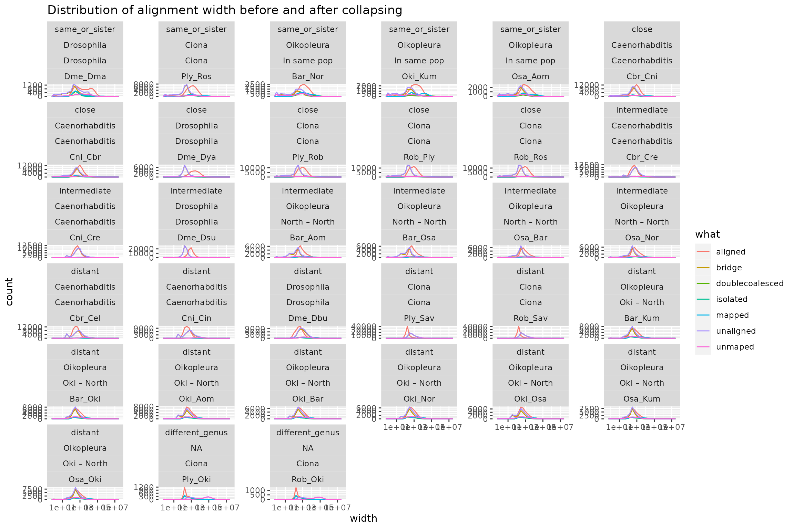
# Aggregating by distance class
p_droso <- gg_freq_poly(widths_all_tibble |> dplyr::filter(genus == "Drosophila")) + aes(col = what) + facet_wrap(~genus + class, nrow = 1, scales = "free_y")
p_ciona <- gg_freq_poly(widths_all_tibble |> dplyr::filter(genus == "Ciona")) + aes(col = what) + facet_wrap(~genus + class, nrow = 1, scales = "free_y")
p_oikop <- gg_freq_poly(widths_all_tibble |> dplyr::filter(genus == "Oikopleura")) + aes(col = what) + facet_wrap(~genus + class, nrow = 1, scales = "free_y")
layout <- "
AAAA
BBB#
CCC#
"
library("patchwork")
(p_droso / p_ciona / p_oikop) + plot_layout(design = layout, guides = 'collect')## Warning: Transformation introduced infinite values in continuous x-axis## Warning: Removed 914 rows containing non-finite values (stat_bin).## Warning: Transformation introduced infinite values in continuous x-axis## Warning: Removed 10307 rows containing non-finite values (stat_bin).## Warning: Transformation introduced infinite values in continuous x-axis## Warning: Removed 7561 rows containing non-finite values (stat_bin).
Saving width distributions and some statistics
Below, I take the widths_all_tibble and perform some statistical operations on it for later. Click below to view.
Details
Click here to view the full table with many summary statistics for width distributions.
library(dplyr) |> suppressPackageStartupMessages()
t_CI <- function(vector, conf.level){
if(length(vector) < 3)
return(NA_character_)
conf_test <- t.test(vector, conf.level = conf.level)
conf_str <- paste(round(conf_test$conf.int,2), collapse=',')
conf_str
}
# Note that because the Wilcox test involves ranking (and therefore sorting),
# this test is computationally demanding for large data frames.
# It works the same as the function above - just slower.
wilcox_CI <- function(vector, conf.level){
if(length(vector) < 3)
return(NA_character_)
conf_test <- wilcox.test(vector, conf.level = conf.level, conf.int = TRUE)
conf_str <- paste(round(conf_test$conf.int, 2), collapse=',')
conf_str
}
stats_to_compute <- list(n = ~n(),
t_CI = ~t_CI(., conf.level=0.95),
wilcox_CI = ~wilcox_CI(., conf.level=0.95),
min = min,
q25 = ~quantile(., 0.25),
median = median,
q75 = ~quantile(., 0.75),
max = max,
mean = mean,
sd = sd)
old.o <- options(max.print = 2000)
widths_all_tibble |>
group_by(name, class, what) |>
summarise(across(width, stats_to_compute)) |> as.data.frame()## `summarise()` has grouped output by 'name', 'class'. You can override using the `.groups` argument.## name class what width_n width_t_CI width_wilcox_CI width_min width_q25 width_median width_q75 width_max width_mean width_sd
## 1 Bar_Aom intermediate aligned 24717 1538.64,1610.24 844,872.5 51 368.00 634.0 1447.00 54452 1574.4417 2871.3143
## 2 Bar_Aom intermediate bridge 20520 302.15,327.1 191,197 0 38.00 178.0 309.00 38380 314.6256 911.6882
## 3 Bar_Aom intermediate doublecoalesced 3452 11606.52,14764.2 3836,4392 58 562.75 2251.5 8361.50 1199960 13185.3589 47312.1501
## 4 Bar_Aom intermediate isolated 1853 862.03,1000.66 559.5,621 58 271.00 481.0 960.00 19742 931.3475 1521.3645
## 5 Bar_Aom intermediate mapped 4197 9887.49,11733.47 3636.5,4119.5 58 547.00 2104.0 7894.00 677793 10810.4818 30499.4833
## 6 Bar_Aom intermediate unaligned 24170 611.96,681.74 210.5,217 1 48.00 194.0 351.00 79613 646.8544 2767.3868
## 7 Bar_Aom intermediate unmaped 4129 2035.51,2410.29 526.5,629 1 82.00 272.0 1330.00 79613 2222.9002 6141.9161
## 8 Bar_Kum distant aligned 31557 957.75,991.34 617,635 51 250.00 469.0 1052.00 43546 974.5433 1522.0555
## 9 Bar_Kum distant bridge 23028 408.46,440.56 289.5,296.5 0 144.00 258.0 441.00 135099 424.5125 1242.4483
## 10 Bar_Kum distant doublecoalesced 7849 4903.46,5419.47 2151.5,2342.5 51 316.00 1354.0 4436.00 216498 5161.4630 11660.5964
## 11 Bar_Kum distant isolated 4346 653.68,717.84 408,449.5 51 177.00 302.0 764.75 16862 685.7561 1078.6911
## 12 Bar_Kum distant mapped 8529 4530.09,4973.8 2005.5,2181.5 51 296.00 1227.0 4188.00 138044 4751.9448 10452.2655
## 13 Bar_Kum distant unaligned 31373 704.7,796.64 323,331 1 147.00 273.0 521.00 273024 750.6715 4154.0813
## 14 Bar_Kum distant unmaped 8515 1455.44,1780.07 502,540 1 144.00 351.0 975.00 273024 1617.7504 7640.8206
## 15 Bar_Nor same_or_sister aligned 15184 2880.98,3022.93 1814.5,1908.5 40 526.00 1305.5 3380.25 55611 2951.9559 4462.0282
## 16 Bar_Nor same_or_sister bridge 8996 378.79,417.1 274,297 0 2.00 124.0 406.00 17680 397.9464 926.7815
## 17 Bar_Nor same_or_sister doublecoalesced 4319 10271.06,12273.5 2512,2848 40 529.00 1517.0 5440.00 569531 11272.2790 33562.3130
## 18 Bar_Nor same_or_sister isolated 3882 1262.66,1415.56 780,845 40 312.00 633.0 1366.50 44180 1339.1121 2429.5923
## 19 Bar_Nor same_or_sister mapped 6188 7355.49,8288.48 2419,2720.5 40 488.00 1373.5 5444.75 240933 7821.9819 18719.2179
## 20 Bar_Nor same_or_sister unaligned 12425 755.51,822.08 359.5,383 1 24.00 225.0 734.00 56097 788.7979 1892.7856
## 21 Bar_Nor same_or_sister unmaped 5214 1122.1,1264.13 557,629.5 1 16.00 325.0 1250.00 56097 1193.1124 2615.7709
## 22 Bar_Oki distant aligned 32265 924.88,956.96 597.5,614.5 51 245.00 454.0 1014.00 43420 940.9199 1469.8924
## 23 Bar_Oki distant bridge 23772 413.37,438.69 288.5,295.5 0 142.00 256.0 443.00 59129 426.0277 995.8294
## 24 Bar_Oki distant doublecoalesced 7849 4896.93,5417.11 2145.5,2338 54 306.00 1347.0 4450.00 218004 5157.0210 11754.6679
## 25 Bar_Oki distant isolated 4321 645.66,714.44 390,427.5 54 172.00 296.0 714.00 21112 680.0470 1153.0032
## 26 Bar_Oki distant mapped 8493 4540.11,4993.94 2005.5,2179 54 291.00 1218.0 4177.00 218004 4767.0211 10667.9952
## 27 Bar_Oki distant unaligned 32076 703.97,795.69 322.5,330.5 1 146.00 272.0 520.00 269200 749.8278 4190.4617
## 28 Bar_Oki distant unmaped 8484 1472.9,1809.5 503.5,539.5 1 148.00 358.0 968.00 269200 1641.2007 7908.2528
## 29 Bar_Osa intermediate aligned 24851 1523.3,1593.59 844.5,873 52 367.00 634.0 1449.00 49546 1558.4455 2826.8737
## 30 Bar_Osa intermediate bridge 20778 303.39,328.1 188.5,194.5 0 37.00 174.0 305.00 32212 315.7473 908.4853
## 31 Bar_Osa intermediate doublecoalesced 3373 12040.47,14823.71 3990.5,4583 59 585.00 2310.0 8781.00 714822 13432.0910 41221.5092
## 32 Bar_Osa intermediate isolated 1732 814.98,929.84 571,634 59 279.75 478.0 968.25 16143 872.4094 1218.6145
## 33 Bar_Osa intermediate mapped 4073 10180.46,12058.44 3738,4238 59 572.00 2153.0 8140.00 562164 11119.4513 30566.1990
## 34 Bar_Osa intermediate unaligned 24266 616.12,690.07 208,214.5 1 47.00 189.0 346.00 106962 653.0948 2938.6433
## 35 Bar_Osa intermediate unmaped 4008 2110.15,2524.29 516.5,607 1 83.00 277.0 1249.50 106962 2317.2161 6686.5554
## 36 Dme_Dbu distant aligned 47893 610.2,623.09 463.5,472 48 205.00 397.0 731.00 16014 616.6455 719.1531
## 37 Dme_Dbu distant bridge 41934 1570.08,1628.57 999.5,1023.5 0 395.00 783.0 1684.00 174913 1599.3246 3055.7262
## 38 Dme_Dbu distant doublecoalesced 5877 15727.3,17388.08 7514,8553.5 54 716.00 3233.0 17797.00 615658 16557.6888 32472.8670
## 39 Dme_Dbu distant isolated 2086 638.88,695.17 519,565 54 245.00 462.0 849.75 5460 667.0240 655.5648
## 40 Dme_Dbu distant mapped 5959 15413.96,17007.28 7325.5,8328 54 701.00 3134.0 17379.50 532037 16210.6196 31370.6132
## 41 Dme_Dbu distant unaligned 47867 2115.49,2325.33 1100,1125.5 1 424.00 853.0 1868.00 1031382 2220.4080 11711.7224
## 42 Dme_Dbu distant unmaped 5951 5780.24,7400.13 2069.5,2221 1 772.50 1602.0 3679.50 1031382 6590.1850 31872.2350
## 43 Dme_Dma same_or_sister aligned 9732 10954.29,11804.24 5294,5971 49 404.00 1953.0 13037.50 291858 11379.2660 21387.8094
## 44 Dme_Dma same_or_sister bridge 7026 884.17,1011.76 270.5,296 0 25.00 183.0 479.00 67561 947.9668 2727.8052
## 45 Dme_Dma same_or_sister doublecoalesced 2272 29884.44,73666.11 623,729 56 240.00 458.5 1274.25 15422642 51775.2720 532092.2108
## 46 Dme_Dma same_or_sister isolated 2008 492.3,638.59 369,398.5 56 199.00 333.5 574.25 60697 565.4417 1671.3122
## 47 Dme_Dma same_or_sister mapped 2706 32527.05,54245.63 667,793.5 56 237.25 465.0 1472.75 8110313 43386.3385 288086.3839
## 48 Dme_Dma same_or_sister unaligned 9138 2583.15,3115.67 521.5,592 1 71.00 276.0 1299.00 545408 2849.4082 12984.5839
## 49 Dme_Dma same_or_sister unmaped 2616 6516.25,8298.34 2456,2975.5 1 266.75 1311.0 5929.50 545408 7407.2924 23241.7218
## 50 Dme_Dsu intermediate aligned 68750 1168.64,1187 931.5,942.5 50 553.00 843.0 1333.00 33370 1177.8198 1227.9791
## 51 Dme_Dsu intermediate bridge 67758 327.89,343.23 221.5,223.5 0 148.00 207.0 298.00 76314 335.5584 1018.9091
## 52 Dme_Dsu intermediate doublecoalesced 878 103687.77,132644.64 45163.5,67214 77 665.75 7701.0 134819.75 1457965 118166.2050 218585.3124
## 53 Dme_Dsu intermediate isolated 379 639.68,784.97 522.5,637 77 264.50 498.0 895.50 7094 712.3245 719.2297
## 54 Dme_Dsu intermediate mapped 992 92498.83,116597.69 39379,60320.5 77 661.50 7251.5 122432.00 1338161 104548.2621 193394.2339
## 55 Dme_Dsu intermediate unaligned 68626 665.01,916.59 223.5,225.5 1 149.00 209.0 303.00 2615430 790.8018 16812.8419
## 56 Dme_Dsu intermediate unmaped 984 23497.61,40593.44 1173,1914.5 1 313.75 693.5 4526.00 2615430 32045.5264 136638.9172
## 57 Dme_Dya close aligned 23059 4475.07,4642.76 3052,3167.5 60 919.00 2264.0 5468.00 92398 4558.9142 6495.6166
## 58 Dme_Dya close bridge 21243 480.45,527.1 213,218 0 123.00 191.0 309.00 75233 503.7723 1734.2930
## 59 Dme_Dya close doublecoalesced 1582 56273.14,90367.16 764.5,1000 63 243.25 500.0 1919.25 6070020 73320.1492 345677.1415
## 60 Dme_Dya close isolated 1314 536.32,649.82 390.5,436 63 203.00 335.0 646.00 25871 593.0723 1048.5917
## 61 Dme_Dya close mapped 1816 51540.18,76021.1 913.5,1292.5 63 247.75 531.0 2852.50 4893795 63780.6382 265960.8921
## 62 Dme_Dya close unaligned 22743 1251.61,1518.29 232,238.5 1 129.00 202.0 360.00 859148 1384.9524 10259.1500
## 63 Dme_Dya close unmaped 1776 10099.58,13319.72 4087,5246 1 407.50 2005.5 10593.00 859148 11709.6492 34595.6295
## 64 Oki_Aom distant aligned 32398 970.18,1004.75 599,616 55 257.25 459.0 1014.00 38135 987.4651 1587.6967
## 65 Oki_Aom distant bridge 23534 556.31,599.03 329.5,340 0 91.00 278.0 548.00 81689 577.6661 1671.8453
## 66 Oki_Aom distant doublecoalesced 8176 5354.77,5893.45 2325,2534.5 64 324.75 1434.0 4868.50 216565 5624.1087 12423.8043
## 67 Oki_Aom distant isolated 4586 723.3,801.8 432.5,474 55 184.00 322.0 803.75 23204 762.5497 1355.7858
## 68 Oki_Aom distant mapped 8864 4909.98,5375.83 2150.5,2340 55 310.75 1291.5 4535.00 216565 5142.9025 11187.1566
## 69 Oki_Aom distant unaligned 32175 925.18,1015.58 400,413 1 129.00 313.0 710.00 189661 970.3809 4136.8088
## 70 Oki_Aom distant unmaped 8848 1839.99,2144.46 786.5,848.5 1 176.00 497.0 1577.50 189661 1992.2255 7305.3661
## 71 Oki_Bar distant aligned 30841 1005.87,1041.09 652,671.5 51 261.00 494.0 1118.00 43759 1023.4778 1577.7563
## 72 Oki_Bar distant bridge 22308 589.8,629.34 359.5,370 0 165.00 302.0 583.00 51342 609.5723 1506.3415
## 73 Oki_Bar distant doublecoalesced 7876 5494.42,6064.46 2353.5,2569.5 54 316.00 1438.0 4926.75 216563 5779.4397 12903.7318
## 74 Oki_Bar distant isolated 4435 691.58,762.42 423,463.5 54 184.50 316.0 775.00 21231 726.9998 1203.0890
## 75 Oki_Bar distant mapped 8533 5044.56,5541.03 2182,2374 54 302.00 1312.0 4580.00 168062 5292.7949 11697.6288
## 76 Oki_Bar distant unaligned 30684 969.67,1068.66 426,439.5 1 172.00 333.0 744.00 283076 1019.1656 4423.5389
## 77 Oki_Bar distant unmaped 8515 1906.94,2244.26 780,845.5 1 182.00 503.0 1572.50 283076 2075.6006 7939.4455
## 78 Oki_Kum same_or_sister aligned 15086 3444.82,3615 2263.5,2378 44 601.00 1598.0 4234.00 72046 3529.9073 5331.9172
## 79 Oki_Kum same_or_sister bridge 9662 554.25,637.24 311.5,332 0 7.00 180.0 497.00 49765 595.7452 2080.8174
## 80 Oki_Kum same_or_sister doublecoalesced 1625 32119.88,41848.39 8992.5,12752.5 48 427.00 2193.0 27502.00 1365817 36984.1342 99970.3102
## 81 Oki_Kum same_or_sister isolated 2993 1640.94,1904.58 726.5,808 44 321.00 597.0 1305.00 58461 1772.7618 3677.9126
## 82 Oki_Kum same_or_sister mapped 5424 10370.48,11387.73 5736,6459.5 44 542.75 2506.0 12995.25 262072 10879.1062 19107.8473
## 83 Oki_Kum same_or_sister unaligned 12386 790.2,882.38 309,329 1 25.00 211.0 614.00 53783 836.2917 2616.6886
## 84 Oki_Kum same_or_sister unmaped 4119 1018.53,1216.1 305.5,364.5 1 8.00 121.0 794.00 53783 1117.3146 3233.7276
## 85 Oki_Nor distant aligned 30055 974.05,1006.36 656.5,675.5 52 261.00 502.0 1122.00 43752 990.2015 1428.7816
## 86 Oki_Nor distant bridge 21180 616.65,658.38 369.5,381.5 0 171.00 305.0 607.00 83492 637.5155 1549.4677
## 87 Oki_Nor distant doublecoalesced 8280 5027.56,5504.15 2359.5,2552.5 54 365.75 1530.0 4800.25 216563 5265.8556 11061.6823
## 88 Oki_Nor distant isolated 4578 769.55,842.95 498,544 54 190.00 357.0 926.25 17200 806.2532 1266.6301
## 89 Oki_Nor distant mapped 8875 4662.56,5086.86 2202.5,2381 54 340.50 1408.0 4490.50 216563 4874.7136 10195.7615
## 90 Oki_Nor distant unaligned 29897 1065.36,1166.48 462.5,478.5 1 178.00 348.0 824.00 280268 1115.9183 4460.4825
## 91 Oki_Nor distant unmaped 8854 2082.17,2403.95 951.5,1028.5 1 194.00 596.0 1929.75 280268 2243.0576 7723.0016
## 92 Oki_Osa distant aligned 30852 1042.47,1080.36 642.5,662 56 273.00 487.0 1098.25 38135 1061.4169 1697.9866
## 93 Oki_Osa distant bridge 22009 554.32,592.64 333.5,344.5 0 75.00 284.0 559.00 47969 573.4841 1450.1810
## 94 Oki_Osa distant doublecoalesced 8132 5358.65,5881.01 2385.5,2593.5 67 338.75 1489.0 4944.25 164824 5619.8308 12014.8889
## 95 Oki_Osa distant isolated 4646 780.7,861.56 471.5,518 61 195.00 345.5 888.75 24353 821.1334 1405.6672
## 96 Oki_Osa distant mapped 8843 4903.95,5356.97 2195,2380.5 61 324.00 1358.0 4561.00 164824 5130.4588 10866.2362
## 97 Oki_Osa distant unaligned 30636 937.76,1034.33 403,416.5 1 114.00 318.0 722.00 211398 986.0471 4311.6897
## 98 Oki_Osa distant unmaped 8821 1834.91,2152.56 757.5,819.5 1 167.00 475.0 1543.00 211398 1993.7338 7609.5710
## 99 Osa_Aom same_or_sister aligned 15261 3005.27,3189.26 1625,1709 44 501.00 1142.0 3015.00 112674 3097.2689 5797.9303
## 100 Osa_Aom same_or_sister bridge 10311 327.61,359.27 263,276.5 0 12.00 186.0 392.00 31147 343.4384 820.0688
## 101 Osa_Aom same_or_sister doublecoalesced 2256 18388.65,27235.22 3626.5,4766.5 46 467.75 1569.0 10310.00 2627520 22811.9331 107135.4024
## 102 Osa_Aom same_or_sister isolated 2791 1152.21,1353.59 619,670 46 297.50 546.0 1015.50 37928 1252.9022 2712.9315
## 103 Osa_Aom same_or_sister mapped 4950 9581.21,10947.52 3444,4108 46 487.25 1441.0 8766.75 394294 10264.3665 24517.1044
## 104 Osa_Aom same_or_sister unaligned 13147 536.81,588.57 281.5,297 1 34.00 219.0 539.50 37950 562.6859 1513.9013
## 105 Osa_Aom same_or_sister unmaped 4063 876.8,1021.52 375,431 1 10.00 200.0 868.00 37950 949.1605 2352.5788
## 106 Osa_Bar intermediate aligned 24430 1555.18,1626.72 870.5,900.5 50 372.00 651.0 1500.00 49309 1590.9494 2852.6515
## 107 Osa_Bar intermediate bridge 20349 374.78,396.54 276.5,283 0 121.00 257.0 400.00 34004 385.6573 791.8057
## 108 Osa_Bar intermediate doublecoalesced 3358 12551.79,15470.77 4230,4939.5 59 596.25 2474.0 9656.25 735649 14011.2802 43135.7029
## 109 Osa_Bar intermediate isolated 1757 837.18,973.65 570.5,635 59 282.00 487.0 962.00 19831 905.4104 1458.2906
## 110 Osa_Bar intermediate mapped 4081 10494.2,12399.52 3967,4547.5 59 588.00 2321.0 8849.00 541207 11446.8598 31041.5565
## 111 Osa_Bar intermediate unaligned 24028 628,681.41 293,300.5 1 128.00 267.0 437.25 79670 654.7069 2111.8623
## 112 Osa_Bar intermediate unmaped 4034 1811.51,2097.04 669,775 1 105.00 340.5 1561.00 79670 1954.2779 4625.0001
## 113 Osa_Kum distant aligned 31182 1005.38,1041.72 619.5,638 56 265.00 470.0 1054.00 38424 1023.5524 1636.9241
## 114 Osa_Kum distant bridge 22406 447.63,470.48 334,341.5 0 184.00 308.0 485.00 52870 459.0552 872.7113
## 115 Osa_Kum distant doublecoalesced 8083 4990.75,5474.86 2291.5,2489 56 332.00 1454.0 4732.50 197453 5232.8028 11101.7552
## 116 Osa_Kum distant isolated 4526 731.3,805.67 450.5,494 56 190.00 331.0 836.75 24056 768.4861 1276.1406
## 117 Osa_Kum distant mapped 8776 4598.02,5019.58 2133.5,2311 56 320.00 1349.5 4387.50 197453 4808.7968 10073.2296
## 118 Osa_Kum distant unaligned 30980 702.92,761.14 366,375 1 174.00 321.0 577.25 171974 732.0299 2613.8709
## 119 Osa_Kum distant unmaped 8755 1318.17,1512.83 566,611.5 1 139.00 381.0 1138.50 171974 1415.4991 4645.6815
## 120 Osa_Nor intermediate aligned 24497 1506.63,1566.54 922,955 50 376.00 680.0 1612.00 45285 1536.5851 2392.0808
## 121 Osa_Nor intermediate bridge 19270 412.45,434.51 289,296.5 0 122.00 264.0 416.75 22261 423.4802 780.8947
## 122 Osa_Nor intermediate doublecoalesced 4500 9521.42,10964.37 3965,4480.5 50 707.00 2473.0 8530.00 388962 10242.8958 24686.7688
## 123 Osa_Nor intermediate isolated 2321 1036.98,1164.82 718.5,793 50 314.00 588.0 1243.00 21037 1100.8992 1570.4058
## 124 Osa_Nor intermediate mapped 5227 8236.78,9288.45 3644,4072.5 50 671.50 2300.0 7719.50 345763 8762.6153 19392.2112
## 125 Osa_Nor intermediate unaligned 24037 682.83,732.22 318,327 1 129.00 280.0 503.00 90708 707.5226 1953.4642
## 126 Osa_Nor intermediate unmaped 5161 1611.15,1816.97 747.5,846.5 1 102.00 389.0 1690.00 90708 1714.0585 3771.2084
## 127 Osa_Oki distant aligned 31322 998.92,1035.17 614,632 56 264.00 466.0 1045.00 38067 1017.0453 1636.6480
## 128 Osa_Oki distant bridge 22486 443.74,466.17 332,339.5 0 180.00 306.0 482.00 52933 454.9548 857.8036
## 129 Osa_Oki distant doublecoalesced 8127 4945.52,5420.28 2278.5,2478 68 328.00 1428.0 4741.00 197453 5182.9032 10916.8876
## 130 Osa_Oki distant isolated 4620 747.44,823.6 454.5,499.5 61 190.00 331.0 848.25 22604 785.5190 1320.1540
## 131 Osa_Oki distant mapped 8836 4557.12,4968.92 2119,2298 61 313.00 1317.0 4389.25 197453 4763.0158 9873.6593
## 132 Osa_Oki distant unaligned 31103 700.4,760.96 365,373.5 1 172.50 320.0 574.00 131977 730.6795 2724.9146
## 133 Osa_Oki distant unmaped 8815 1316.03,1519.19 565,609.5 1 140.50 384.0 1120.00 131977 1417.6076 4865.2006
## 134 Ply_Oki different_genus aligned 2127 323.32,391.14 233,258.5 91 158.00 196.0 375.50 30669 357.2294 797.3819
## 135 Ply_Oki different_genus bridge 821 1656.48,2286.29 1019.5,1210 0 381.00 811.0 1886.00 81648 1971.3837 4596.8409
## 136 Ply_Oki different_genus doublecoalesced 1304 1542.61,2104.86 648.5,765 91 193.00 489.0 1261.75 81983 1823.7324 5174.7058
## 137 Ply_Oki different_genus isolated 941 406.56,543.47 342.5,389.5 91 172.00 263.0 569.00 30669 475.0138 1070.0561
## 138 Ply_Oki different_genus mapped 1306 1540.37,2101.79 646.5,762 91 193.00 489.0 1254.00 81983 1821.0819 5171.0702
## 139 Ply_Oki different_genus unaligned 2112 54816.04,63130.34 34084.5,40805.5 1 1180.25 15740.5 79679.50 1318064 58973.1908 97419.3303
## 140 Ply_Oki different_genus unmaped 1292 89137.72,101160.85 71179.5,82074.5 3 22040.25 60884.0 133164.25 1318064 95149.2825 110144.6120
## 141 Ply_Rob close aligned 56000 1595.82,1633.3 1127.5,1151 50 387.00 881.0 1920.25 71233 1614.5579 2262.6163
## 142 Ply_Rob close bridge 51031 420.52,443.07 246.5,251 0 45.00 214.0 375.00 58679 431.7949 1300.0021
## 143 Ply_Rob close doublecoalesced 3152 32691.15,39854.43 3150.5,4217 53 495.00 1401.5 11693.00 1226353 36272.7919 102555.6949
## 144 Ply_Rob close isolated 2691 779.36,849.31 606.5,656 51 268.00 534.0 996.50 14541 814.3363 925.3702
## 145 Ply_Rob close mapped 4969 21143.06,24117.62 4100,5397.5 51 476.00 1512.0 14541.00 626768 22630.3417 53477.8367
## 146 Ply_Rob close unaligned 53216 695.11,736.84 268.5,273.5 1 78.00 235.0 436.00 114410 715.9753 2456.2716
## 147 Ply_Rob close unmaped 4668 3255.42,3628.54 1803.5,2016.5 1 192.75 1145.5 3833.50 114410 3441.9818 6501.6677
## 148 Ply_Ros same_or_sister aligned 40659 2534.44,2612.26 1669.5,1716 43 498.00 1251.0 2974.00 97390 2573.3486 4003.2243
## 149 Ply_Ros same_or_sister bridge 32958 364.42,391.57 231.5,237.5 0 30.00 195.5 340.00 97102 377.9965 1257.6133
## 150 Ply_Ros same_or_sister doublecoalesced 4224 25242.83,30881.69 1803.5,2091.5 50 491.00 1135.0 4150.50 1322492 28062.2607 93465.4230
## 151 Ply_Ros same_or_sister isolated 4830 1135.75,1228.97 830.5,883 45 350.00 697.0 1381.00 35993 1182.3617 1652.3764
## 152 Ply_Ros same_or_sister mapped 7701 14397.07,16011.39 3100,3677.5 45 532.00 1461.0 9053.00 443768 15204.2322 36134.0852
## 153 Ply_Ros same_or_sister unaligned 36133 640.21,686.43 262,269 1 71.00 220.0 444.00 169778 663.3193 2240.8260
## [ reached 'max' / getOption("max.print") -- omitted 36 rows ]
widths_all_tibble |>
group_by(what, class, genus) |>
summarise(across(width, stats_to_compute)) |> as.data.frame()## `summarise()` has grouped output by 'what', 'class'. You can override using the `.groups` argument.## what class genus width_n width_t_CI width_wilcox_CI width_min width_q25 width_median width_q75 width_max width_mean width_sd
## 1 aligned same_or_sister Drosophila 9732 10954.29,11804.24 5294,5971 49 404.00 1953.0 13037.50 291858 11379.2660 21387.8094
## 2 aligned same_or_sister Ciona 40659 2534.44,2612.26 1669.5,1716 43 498.00 1251.0 2974.00 97390 2573.3486 4003.2243
## 3 aligned same_or_sister Oikopleura 45531 3144.09,3240.23 1908,1965.5 40 536.00 1328.0 3549.50 112674 3192.1570 5233.1119
## 4 aligned close Drosophila 23059 4475.07,4642.76 3052,3167.5 60 919.00 2264.0 5468.00 92398 4558.9142 6495.6166
## 5 aligned close Ciona 176589 1497.75,1517.72 1055,1067.5 47 366.00 823.0 1784.00 83419 1507.7380 2140.7792
## 6 aligned intermediate Drosophila 68750 1168.64,1187 931.5,942.5 50 553.00 843.0 1333.00 33370 1177.8198 1227.9791
## 7 aligned intermediate Oikopleura 98495 1547.95,1582.22 876.5,891.5 50 371.00 650.0 1497.50 54452 1565.0848 2743.5154
## 8 aligned distant Drosophila 47893 610.2,623.09 463.5,472 48 205.00 397.0 731.00 16014 616.6455 719.1531
## 9 aligned distant Ciona 138664 243.89,247.2 179,179.5 60 137.00 170.0 221.00 25919 245.5469 314.0168
## 10 aligned distant Oikopleura 250472 995.75,1008.06 630,636.5 51 259.00 474.0 1065.00 43759 1001.9047 1572.4288
## 11 aligned different_genus <NA> 4474 320.97,361.86 227,243 78 156.00 193.0 356.75 30669 341.4119 697.5420
## 12 bridge same_or_sister Drosophila 7026 884.17,1011.76 270.5,296 0 25.00 183.0 479.00 67561 947.9668 2727.8052
## 13 bridge same_or_sister Ciona 32958 364.42,391.57 231.5,237.5 0 30.00 195.5 340.00 97102 377.9965 1257.6133
## 14 bridge same_or_sister Oikopleura 28969 428.39,460.65 284.5,295.5 0 6.00 169.0 431.00 49765 444.5169 1400.7196
## 15 bridge close Drosophila 21243 480.45,527.1 213,218 0 123.00 191.0 309.00 75233 503.7723 1734.2930
## 16 bridge close Ciona 162242 378.06,390.49 226.5,229 0 51.00 201.0 343.00 90560 384.2791 1277.3452
## 17 bridge intermediate Drosophila 67758 327.89,343.23 221.5,223.5 0 148.00 207.0 298.00 76314 335.5584 1018.9091
## 18 bridge intermediate Oikopleura 80917 352.82,364.58 236,239.5 0 58.00 222.0 369.00 38380 358.6999 853.0667
## 19 bridge distant Drosophila 41934 1570.08,1628.57 999.5,1023.5 0 395.00 783.0 1684.00 174913 1599.3246 3055.7262
## 20 bridge distant Ciona 130475 1026.7,1052.15 599,607 0 293.00 465.0 979.00 175994 1039.4208 2345.1046
## 21 bridge distant Oikopleura 180723 512.66,524.69 329,332 0 146.00 286.0 511.00 135099 518.6746 1304.3395
## 22 bridge different_genus <NA> 1766 1652.73,2053.32 992,1121 0 372.00 775.0 1817.00 81648 1853.0238 4291.6322
## 23 doublecoalesced same_or_sister Drosophila 2272 29884.44,73666.11 623,729 56 240.00 458.5 1274.25 15422642 51775.2720 532092.2108
## 24 doublecoalesced same_or_sister Ciona 4224 25242.83,30881.69 1803.5,2091.5 50 491.00 1135.0 4150.50 1322492 28062.2607 93465.4230
## 25 doublecoalesced same_or_sister Oikopleura 8200 17889.71,21195.14 3340,3847.5 40 496.75 1606.0 8502.50 2627520 19542.4283 76347.1262
## 26 doublecoalesced close Drosophila 1582 56273.14,90367.16 764.5,1000 63 243.25 500.0 1919.25 6070020 73320.1492 345677.1415
## 27 doublecoalesced close Ciona 9517 32836.42,36892.14 3058,3590.5 52 466.00 1304.0 10497.00 1394106 34864.2812 100921.6066
## 28 doublecoalesced intermediate Drosophila 878 103687.77,132644.64 45163.5,67214 77 665.75 7701.0 134819.75 1457965 118166.2050 218585.3124
## 29 doublecoalesced intermediate Oikopleura 14683 11896.19,13162.07 4135,4423.5 50 612.00 2400.0 8719.50 1199960 12529.1297 39127.8040
## 30 doublecoalesced distant Drosophila 5877 15727.3,17388.08 7514,8553.5 54 716.00 3233.0 17797.00 615658 16557.6888 32472.8670
## 31 doublecoalesced distant Ciona 8179 20048.5,21449.54 12801.5,13788.5 61 2215.00 8371.0 25468.50 526016 20749.0219 32319.1280
## 32 doublecoalesced distant Oikopleura 64372 5287.56,5469.02 2349.5,2420.5 51 327.00 1439.0 4730.00 218004 5378.2904 11744.8510
## 33 doublecoalesced different_genus <NA> 2704 1584.88,1965.09 654.5,733.5 78 189.00 469.5 1252.00 81983 1774.9852 5041.5504
## 34 isolated same_or_sister Drosophila 2008 492.3,638.59 369,398.5 56 199.00 333.5 574.25 60697 565.4417 1671.3122
## 35 isolated same_or_sister Ciona 4830 1135.75,1228.97 830.5,883 45 350.00 697.0 1381.00 35993 1182.3617 1652.3764
## 36 isolated same_or_sister Oikopleura 9666 1389.58,1507.41 725,763.5 40 312.00 594.0 1239.50 58461 1448.4957 2954.8151
## 37 isolated close Drosophila 1314 536.32,649.82 390.5,436 63 203.00 335.0 646.00 25871 593.0723 1048.5917
## 38 isolated close Ciona 7994 789.28,830.11 601.5,630.5 50 259.00 512.0 967.75 14541 809.6955 931.1006
## 39 isolated intermediate Drosophila 379 639.68,784.97 522.5,637 77 264.50 498.0 895.50 7094 712.3245 719.2297
## 40 isolated intermediate Oikopleura 7663 930.69,996.17 625,658.5 50 289.00 511.0 1041.00 21037 963.4338 1462.0853
## 41 isolated distant Drosophila 2086 638.88,695.17 519,565 54 245.00 462.0 849.75 5460 667.0240 655.5648
## 42 isolated distant Ciona 1386 582.66,684.67 400,451 61 173.00 275.5 708.25 12900 633.6652 967.9353
## 43 isolated distant Oikopleura 36058 742.77,768.87 454.5,469.5 51 185.00 324.0 822.00 24353 755.8199 1264.6923
## 44 isolated different_genus <NA> 1933 402.17,472.71 330.5,361 78 169.00 251.0 550.00 30669 437.4397 790.7655
## 45 mapped same_or_sister Drosophila 2706 32527.05,54245.63 667,793.5 56 237.25 465.0 1472.75 8110313 43386.3385 288086.3839
## 46 mapped same_or_sister Ciona 7701 14397.07,16011.39 3100,3677.5 45 532.00 1461.0 9053.00 443768 15204.2322 36134.0852
## 47 mapped same_or_sister Oikopleura 16562 9236.61,9869.7 3755.5,4081 40 502.00 1591.0 8854.25 394294 9553.1524 20783.1448
## 48 mapped close Drosophila 1816 51540.18,76021.1 913.5,1292.5 63 247.75 531.0 2852.50 4893795 63780.6382 265960.8921
## 49 mapped close Ciona 14347 21986.59,23820.35 3930,4585 50 446.00 1392.0 13495.50 730624 22903.4749 56028.4109
## 50 mapped intermediate Drosophila 992 92498.83,116597.69 39379,60320.5 77 661.50 7251.5 122432.00 1338161 104548.2621 193394.2339
## 51 mapped intermediate Oikopleura 17578 10009.24,10832.49 3847,4098 50 595.00 2231.5 8118.75 677793 10420.8637 27842.3288
## 52 mapped distant Drosophila 5959 15413.96,17007.28 7325.5,8328 54 701.00 3134.0 17379.50 532037 16210.6196 31370.6132
## 53 mapped distant Ciona 8189 20019.71,21418.06 12785.5,13770.5 61 2203.00 8358.0 25455.00 526016 20718.8846 32276.7284
## 54 mapped distant Oikopleura 69749 4862.84,5020.76 2181.5,2245.5 51 311.00 1311.0 4411.00 218004 4941.7983 10639.7762
## 55 mapped different_genus <NA> 2708 1582.66,1962.34 653,731 78 189.00 469.5 1243.00 81983 1772.4952 5038.1306
## 56 unaligned same_or_sister Drosophila 9138 2583.15,3115.67 521.5,592 1 71.00 276.0 1299.00 545408 2849.4082 12984.5839
## 57 unaligned same_or_sister Ciona 36133 640.21,686.43 262,269 1 71.00 220.0 444.00 169778 663.3193 2240.8260
## 58 unaligned same_or_sister Oikopleura 37958 705.33,746.63 316.5,328 1 27.00 220.5 622.75 56097 725.9802 2053.0616
## 59 unaligned close Drosophila 22743 1251.61,1518.29 232,238.5 1 129.00 202.0 360.00 859148 1384.9524 10259.1500
## 60 unaligned close Ciona 168424 592.73,619.35 239.5,242 1 75.00 212.0 382.00 222284 606.0407 2786.3012
## 61 unaligned intermediate Drosophila 68626 665.01,916.59 223.5,225.5 1 149.00 209.0 303.00 2615430 790.8018 16812.8419
## 62 unaligned intermediate Oikopleura 96501 649.84,681.14 257.5,261.5 1 72.00 233.0 410.00 106962 665.4904 2480.1362
## 63 unaligned distant Drosophila 47867 2115.49,2325.33 1100,1125.5 1 424.00 853.0 1868.00 1031382 2220.4080 11711.7224
## 64 unaligned distant Ciona 138550 1507.32,1563.34 673,683 1 301.00 497.0 1147.00 340903 1535.3326 5319.4596
## 65 unaligned distant Oikopleura 248924 864.59,895.56 380.5,384.5 1 154.00 309.0 639.00 283076 880.0764 3941.8615
## 66 unaligned different_genus <NA> 4443 51033.47,56289.1 31315.5,35664.5 1 1059.00 12496.0 72354.50 1318064 53661.2845 89344.3051
## 67 unmaped same_or_sister Drosophila 2616 6516.25,8298.34 2456,2975.5 1 266.75 1311.0 5929.50 545408 7407.2924 23241.7218
## 68 unmaped same_or_sister Ciona 6304 1718.19,1933.18 905.5,1002.5 1 24.00 521.0 1977.50 169778 1825.6851 4353.8685
## 69 unmaped same_or_sister Oikopleura 13396 1049.23,1142.4 434.5,471.5 1 9.00 209.0 989.25 56097 1095.8156 2750.6950
## 70 unmaped close Drosophila 1776 10099.58,13319.72 4087,5246 1 407.50 2005.5 10593.00 859148 11709.6492 34595.6295
## 71 unmaped close Ciona 13298 2842.81,3131.98 1138,1230 1 82.00 595.0 2508.75 222284 2987.3928 8505.9641
## 72 unmaped intermediate Drosophila 984 23497.61,40593.44 1173,1914.5 1 313.75 693.5 4526.00 2615430 32045.5264 136638.9172
## 73 unmaped intermediate Oikopleura 17332 1951.06,2110.28 647.5,699 1 92.00 321.0 1489.00 106962 2030.6699 5347.2715
## 74 unmaped distant Drosophila 5951 5780.24,7400.13 2069.5,2221 1 772.50 1602.0 3679.50 1031382 6590.1850 31872.2350
## 75 unmaped distant Ciona 8137 9082.69,9868.25 5618,5949 1 1916.00 4319.0 9995.00 340903 9475.4708 18074.6835
## 76 unmaped distant Oikopleura 69607 1748.1,1853.14 675.5,694.5 1 160.00 430.0 1319.00 283076 1800.6193 7069.6154
## 77 unmaped different_genus <NA> 2679 83929.15,91617.44 66459.5,73084.5 1 19851.50 55753.0 119267.50 1318064 87773.2912 101470.9185Width distribution of aligned and mapped regions
Aligned regions
Whole genomes
Aligned means “before coalescing†and mapped means “after coalescingâ€.
gg_freq_poly(widths$gbs) +
aes(width, after_stat(density), col=name) +
facet_wrap(~genus + class, scales = "free_y") +
ggtitle("Distribution of aligned region widths") +
scale_color_manual(values = names_table$class)
gg_freq_poly(widths$gbs |> dplyr::filter(genus == "Oikopleura")) +
aes(col=name) +
facet_wrap(~dist, scales = "free_y", nrow = 1) +
ggtitle("Distribution of aligned region widths") +
scale_color_manual(values = names_table$query)
gg_freq_poly(widths$gbs) +
aes(width, after_stat(density), col=class) +
facet_wrap(~genus, scales = "free_y", ncol = 1) +
ggtitle("Distribution of aligned region widths")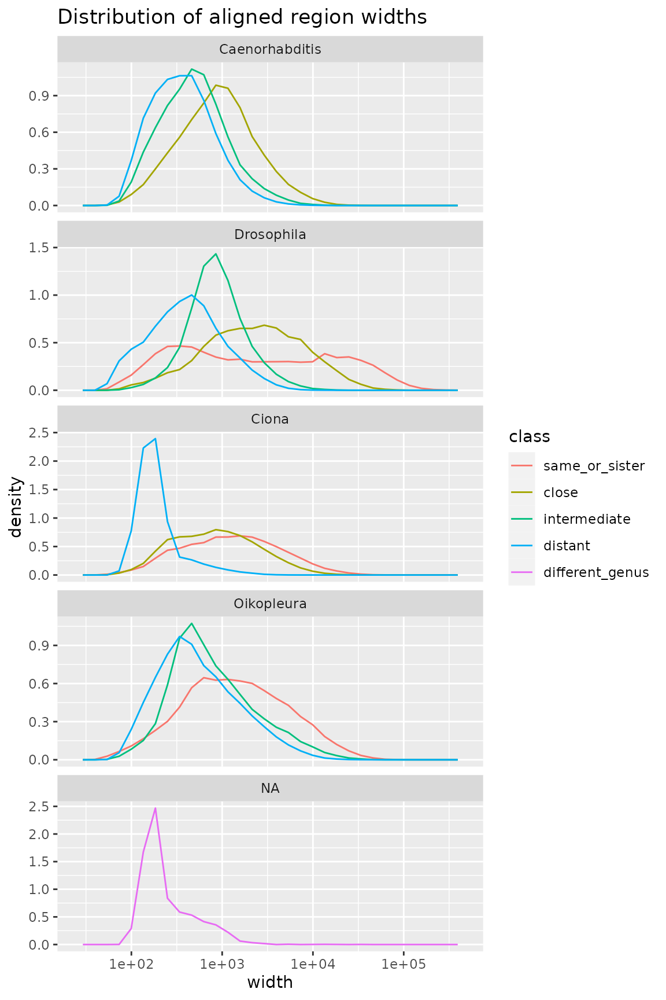
Faceted by arms
The distribution of widths is not the same on long and short arms.
Note that for this reason, it would be unwise to filter by width on some operations such as coalescing.
gg_freq_poly(widths$gbs) +
aes(col=Arm) +
facet_wrap(~chr, scales = "free_y") +
ggtitle("Distribution of aligned region widths")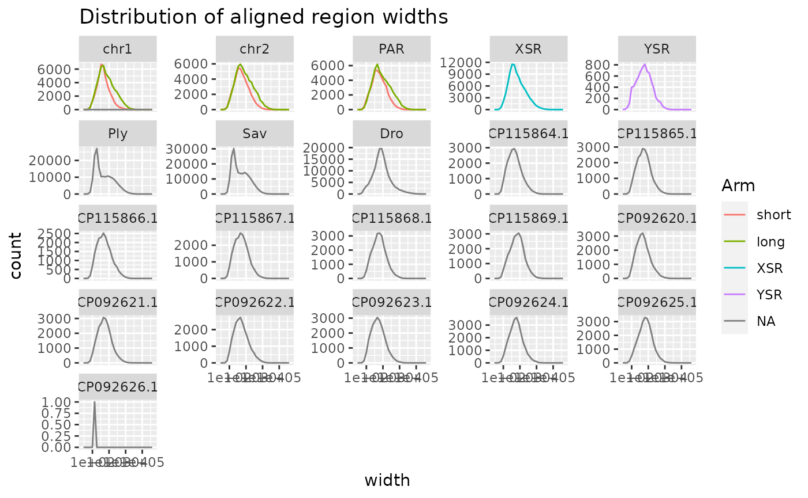
gg_freq_poly(widths$gbs |> subset(chr == "chr1")) +
aes(col=Arm) +
facet_wrap(~name, scales = "free_y", ncol=5) +
ggtitle("Distribution of aligned region widths on chr1")
Width distribution per arm follows similar pattern on chr2 (first graph). Pairs at a similar evolutionary distance show similar profile, with the exception of Osa_Aom, where the number of alignments on short arms is higher. Nevertheless, the trend of widths being longer on long arms stay true, so we can average them in the plot below.
gg_freq_poly(widths$gbs |> subset(chr %in% c("chr1", "chr2", "PAR"))) +
aes(col=Arm) +
facet_wrap(~dist, scales = "free_y", nrow=1) +
ggtitle("Distribution of alignment widths before collapsing, split by distance group")
Unaligned regions
Unaligned regions show no difference of width between arms, except perhaps at the “same population†level.
gg_freq_poly(widths$unal) +
aes(col=Arm) +
facet_wrap(~chr, scales = "free_y") +
ggtitle("Distribution of unaligned region widths")
gg_freq_poly(widths$unal |> subset(chr == "chr1")) +
aes(col=Arm) +
facet_wrap(~name, scales = "free_y", ncol=5) +
ggtitle("Distribution of unaligned region widths")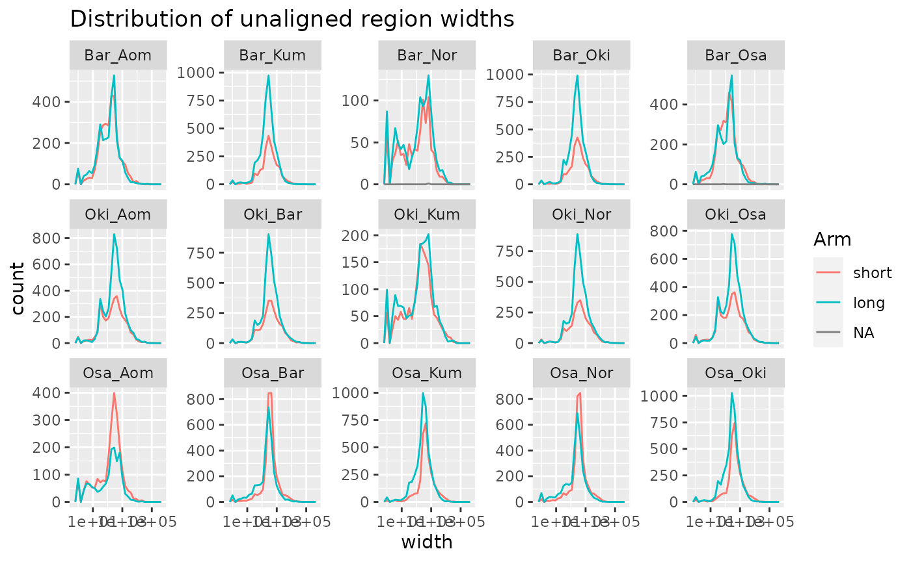
gg_freq_poly(widths$unal |> subset(chr %in% c("chr1", "chr2", "PAR"))) +
aes(col=Arm) +
facet_wrap(~dist, scales = "free_y", ncol=1) +
ggtitle("Distribution of unaligned region widths") +
geom_vline(xintercept = 300) +
scale_x_log10("Width (vertical bar at 300 bp)")## Scale for 'x' is already present. Adding another scale for 'x', which will replace the existing scale.Interestingly, only in Oikopleura do the width distributions from pairs of different distance peak at the same size. Could that be because the genome is very compact?
gg_freq_poly(widths$unal |> subset(chr %in% c("chr1", "chr2", "PAR"))) +
aes(col=name) +
facet_wrap(~dist, scales = "free_y", ncol=1) +
ggtitle("Distribution of unaligned region widths") +
geom_vline(xintercept = 300) +
scale_x_log10("Width (vertical bar at 300 bp)") +
scale_color_manual(values = names_table$query)## Scale for 'x' is already present. Adding another scale for 'x', which will replace the existing scale.
gg_freq_poly(widths$unal) +
aes(col=class) +
facet_wrap(~genus, scales = "free_y", ncol=1) +
ggtitle("Distribution of unaligned region widths") +
geom_vline(xintercept = 300) +
scale_x_log10("Width (vertical bar at 300 bp)")## Scale for 'x' is already present. Adding another scale for 'x', which will replace the existing scale.
Mapped (coalesced) regions
After coalescing, some width distribution become clearly bimodal. The distributions are hard to compare between genera and between evolutionary distance groups, and even within group for the “same population†Oikopleura.
The plots below display the data in details for the reader to make their opinion about the above statement.
Whole data
Width distributions.
# Using after_stat(density) to make more meaningful comparisons between genus
gg_freq_poly(widths$coa) +
aes(width, after_stat(density), col=name) +
facet_wrap(~genus + class, scales = "free_y") +
ggtitle("Distribution of mapped region widths") +
scale_color_manual(values = names_table$query)
Faceting by genus only. Why is North / North (“intermediateâ€) not bimodal?
gg_freq_poly(widths$coa) +
aes(width, after_stat(density), col=class) +
facet_wrap(~genus, scales = "free_y", ncol = 1) +
ggtitle("Distribution of mapped region widths")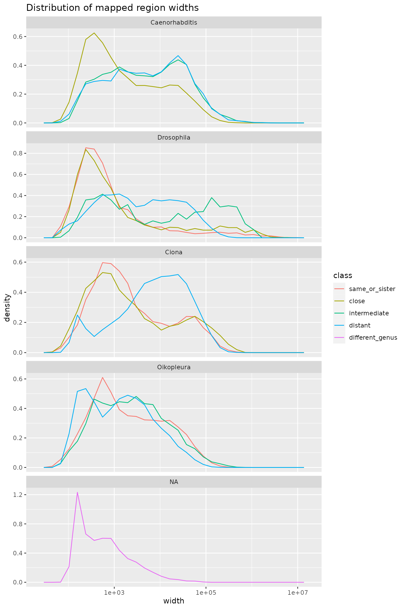
What is in the first peak of the bimodal distributions ?
Empirical cumulative distributions
ggplot(widths$coa) + aes(width, col = genus) + stat_ecdf() + scale_x_log10(limits = c(50,5e6)) + facet_wrap(~class)## Warning: Removed 13 rows containing non-finite values (stat_ecdf).
ggplot(widths$coa) + aes(width, col = class) + stat_ecdf() + scale_x_log10(limits = c(50,5e6)) + facet_wrap(~genus)## Warning: Removed 13 rows containing non-finite values (stat_ecdf).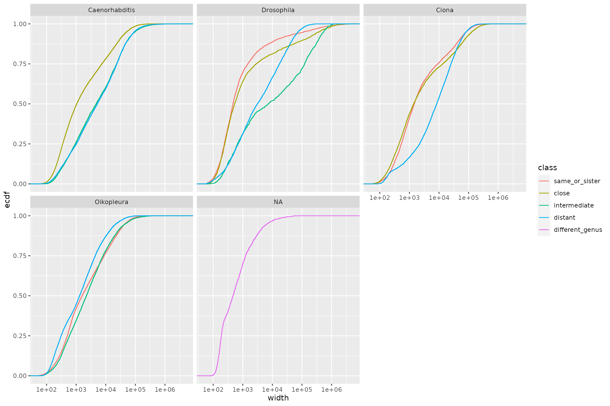
Cumulative sums.
Note: there is a bug: the lines jump between replicates instead of plotting them separately
widths$coa |>
dplyr::arrange(name, width) |>
dplyr::group_by(name) |>
dplyr::mutate(cumsum = cumsum(width)) |>
ggplot() + facet_wrap(~class) + aes(x = width, y = cumsum, col = genus) + geom_line() + scale_x_log10() + scale_y_log10()
widths$coa |>
dplyr::arrange(name, width) |>
dplyr::group_by(name) |>
dplyr::mutate(cumsum = cumsum(width)) |>
ggplot() + facet_wrap(~genus) + aes(x = width, y = cumsum, col = class) + geom_line() + scale_x_log10() + scale_y_log10()
By arm
When faceted by chromosome and arm type, bimodality is also observed. There is a small peak under 500 bp, found on all arms except YSR. The second peak shows two different distributions for long and short arms.
gg_freq_poly(widths$coa) +
aes(col=Arm) +
facet_wrap(~chr, scales = "free_y") +
ggtitle("Distribution of alignment widths after collapsing, split by arm.")
gg_freq_poly(widths$coa) +
aes(col=flag) +
facet_wrap(~chr, scales = "free_y") +
ggtitle("Distribution of alignment widths after collapsing, split by flag.")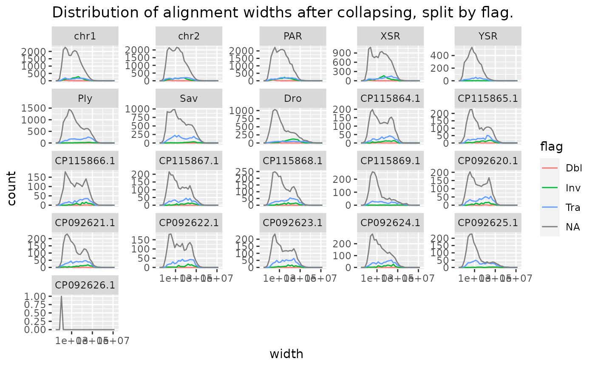
gg_freq_poly(widths$coa ) +
aes(col=Arm) +
facet_wrap(~name, scales = "free_y", ncol=5) +
ggtitle("Distribution of alignment widths on chr1 after collapsing, split by genome pair")+
geom_vline(xintercept = 500)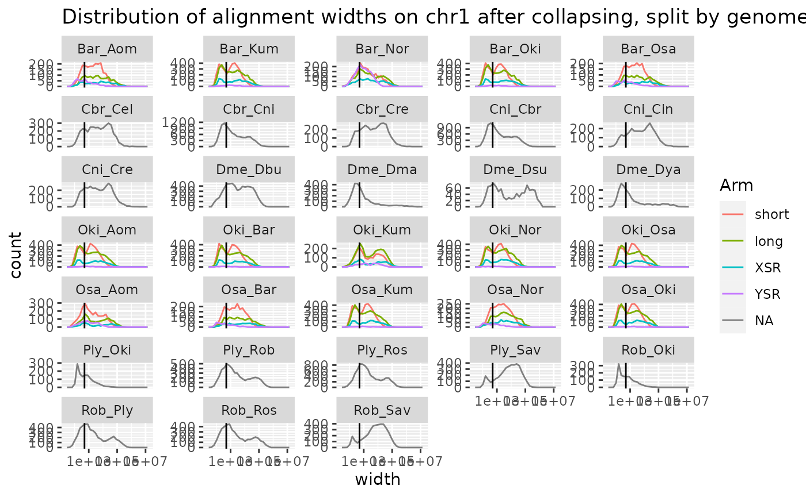
gg_freq_poly(widths$coa |> subset(chr %in% c("chr1", "chr2", "PAR"))) +
aes(col=Arm) +
facet_wrap(~dist, scales = "free_y", ncol=1) +
ggtitle("Distribution of alignment widths after collapsing, split by distance group")
gg_freq_poly(widths$coa |> subset(chr %in% c("chr1", "chr2", "PAR"))) +
aes(col=flag) +
facet_wrap(~class + flag, scales = "free_y") +
ggtitle("Distribution of alignment widths after collapsing, split by distance group")
Therefore, if the first peak represented events that we do not want to consider breaking synteny (either alignment artefacts or insertion/transpositions of short mobile elements), we could re-coalesce once after removing the shortest intervals. We tried some width cutoffs on the coalescing step, but at 500 bp, the coverage of the genome by the resulting mapped regions is already decreasing (vignette("CoalescingCutoffs", package = "OikScrambling")).
Non-coalesced mapped regions
The mapped regions that are found identical in the aligned set are those that were not coalesced… Are they the small peak ?
Focus on Oki – North comparisons
p_all <- gg_freq_poly(widths$coa |> dplyr::filter(dist == "Oki – North")) +
aes(col=name) +
facet_wrap(~dist, scales = "free_y", nrow = 1) +
ggtitle("Distribution of mapped region widths (vline at 600)") + theme_bw() +
geom_vline(xintercept = 600)
p_coa_map <- gg_freq_poly(widths$coa |> dplyr::filter(dist == "Oki – North", Arm %in% c("short", "long"))) +
aes(col=name) +
ggtitle("FALSE = collapsed, TRUE = non-collapsed") + theme_bw() +
geom_vline(xintercept = 600) +
facet_wrap(~nonCoa + Arm)
p_all + p_coa_map + plot_layout(guides = 'collect') + theme_bw()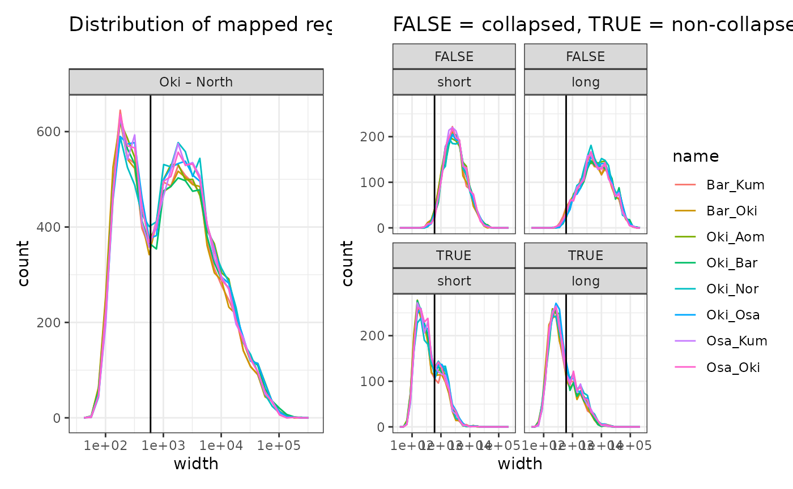
The short-width mapped peak is made of aligned regions that can not be coalesced.
We know from vignette("RepeatRegions", package = "OikScrambling") that these short mapped regions are not repeats.
Unmapped regions
Unmapped regions are a bit longer on the short arm in Oki – North comparisons…
gg_freq_poly(widths$unmap) +
aes(col=Arm) +
facet_wrap(~chr, scales = "free_y") +
ggtitle("Distribution of unmapped regions width after collapsing, split by arm.")
gg_freq_poly(widths$unmap) +
aes(col=Arm) +
facet_wrap(~name, scales = "free_y", ncol=5) +
ggtitle("Distribution of unmapped regions width after collapsing, split by genome pair")
gg_freq_poly(widths$unmap |> subset(chr %in% c("chr1", "chr2", "PAR"))) +
aes(col=Arm) +
facet_wrap(~dist, scales = "free_y", nrow=1) +
ggtitle("Distribution of unmapped region widths after collapsing, split by distance group") +
geom_vline(xintercept = 300) +
scale_x_log10("Width (vertical bar at 300 bp)")## Scale for 'x' is already present. Adding another scale for 'x', which will replace the existing scale.Bridge regions
Note the short peak when comparing pairs within the same population.
gg_freq_poly(widths$bri) +
aes(col=Arm) +
facet_wrap(~chr, scales = "free_y") +
ggtitle("Distribution of widths of bridge regions, split by arm.")## Warning: Transformation introduced infinite values in continuous x-axis## Warning: Removed 18784 rows containing non-finite values (stat_bin).
gg_freq_poly(widths$bri) +
aes(col=Arm) +
facet_wrap(~name, scales = "free_y", ncol=5) +
ggtitle("Distribution of widths of bridge regions, split by genome pair")## Warning: Transformation introduced infinite values in continuous x-axis
## Removed 18784 rows containing non-finite values (stat_bin).
gg_freq_poly(widths$bri |> subset(chr %in% c("chr1", "chr2", "PAR"))) +
aes(col=Arm) +
facet_wrap(~dist, scales = "free_y", nrow=1) +
ggtitle("Distribution of widths of bridge regions, split by distance group") +
geom_vline(xintercept = 300) +
scale_x_log10("Width (vertical bar at 300 bp)")## Scale for 'x' is already present. Adding another scale for 'x', which will replace the existing scale.## Warning: Transformation introduced infinite values in continuous x-axis## Warning: Removed 5425 rows containing non-finite values (stat_bin).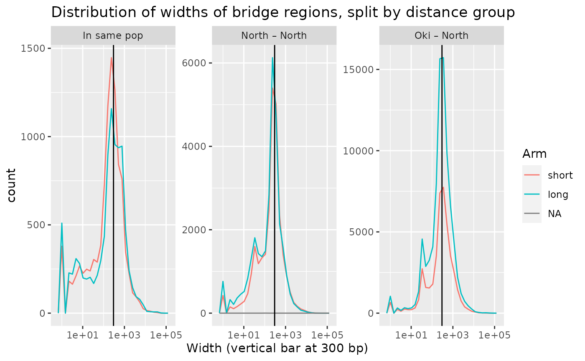
Translocated regions
Whole region
Reminder: here we measure the distance between the two colinear pairs that are separated by the translocated pair.
gg_freq_poly(widths$tra) +
aes(col=Arm) +
facet_wrap(~chr, scales = "free_y") +
ggtitle("Distribution of widths of translocated regions, split by arm.")## Warning: Transformation introduced infinite values in continuous x-axis## Warning: Removed 207 rows containing non-finite values (stat_bin).
gg_freq_poly(widths$tra) +
aes(col=Arm) +
facet_wrap(~name, scales = "free_y", ncol=5) +
ggtitle("Distribution of widths of translocated regions, split by genome pair")## Warning: Transformation introduced infinite values in continuous x-axis
## Removed 207 rows containing non-finite values (stat_bin).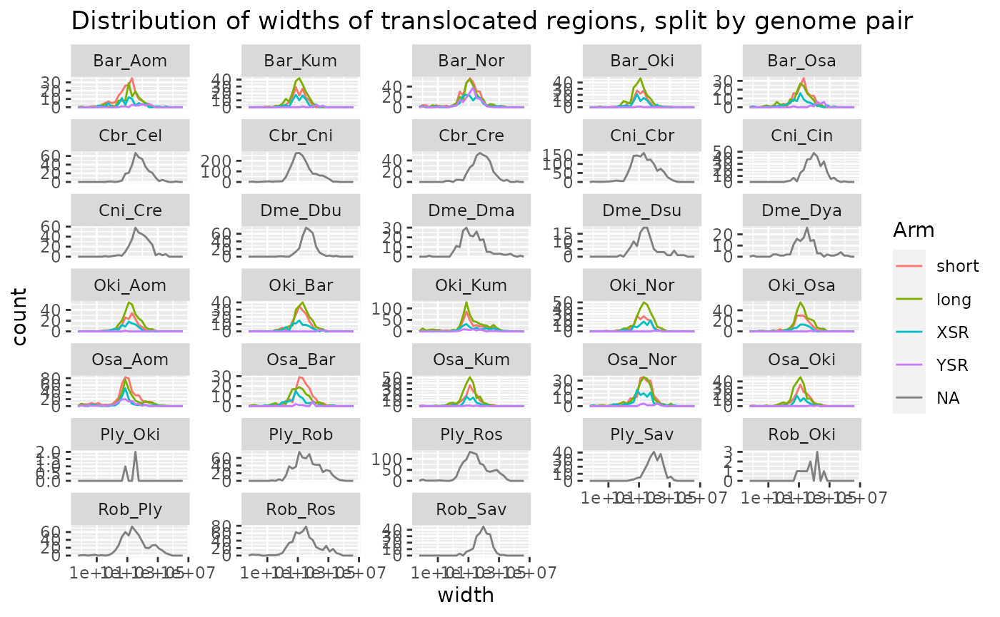
gg_freq_poly(widths$tra |> subset(chr %in% c("chr1", "chr2", "PAR"))) +
aes(col=Arm) +
facet_wrap(~dist, scales = "free_y", nrow=1) +
ggtitle("Distribution of widths of translocated regions, split by distance group") +
geom_vline(xintercept = 300) +
scale_x_log10("Width (vertical bar at 300 bp)")## Scale for 'x' is already present. Adding another scale for 'x', which will replace the existing scale.## Warning: Transformation introduced infinite values in continuous x-axis## Warning: Removed 125 rows containing non-finite values (stat_bin).Whole region, after removal
Small peak in “same pop†disapears by design. Total number in the main peak also decreases, because they may pass the size filter on the query genome.
gg_freq_poly(widths$tra2) +
aes(col=Arm) +
facet_wrap(~chr, scales = "free_y") +
ggtitle("Distribution of widths of translocated regions (after removal), split by arm.")## Warning: Transformation introduced infinite values in continuous x-axis## Warning: Removed 9 rows containing non-finite values (stat_bin).
gg_freq_poly(widths$tra2) +
aes(col=Arm) +
facet_wrap(~name, scales = "free_y", ncol=5) +
ggtitle("Distribution of widths of translocated regions (after removal), split by genome pair")## Warning: Transformation introduced infinite values in continuous x-axis
## Removed 9 rows containing non-finite values (stat_bin).
gg_freq_poly(widths$tra2 |> subset(chr %in% c("chr1", "chr2", "PAR"))) +
aes(col=Arm) +
facet_wrap(~dist, scales = "free_y", nrow=1) +
ggtitle("Distribution of widths of translocated regions (after removal), split by distance group") +
geom_vline(xintercept = 300) +
scale_x_log10("Width (vertical bar at 300 bp)")## Scale for 'x' is already present. Adding another scale for 'x', which will replace the existing scale.## Warning: Transformation introduced infinite values in continuous x-axis## Warning: Removed 2 rows containing non-finite values (stat_bin).Aligned, before removal
widths$tra_coa_aln <- makeWidthsDF(sapply(coa, \(gb) gb |> flagTranslocations() |> filterTranslocations())) |> tibble::as_tibble()
gg_freq_poly(widths$tra_coa_aln) +
aes(col=Arm) +
facet_wrap(~chr, scales = "free_y") +
ggtitle("Distribution of widths of translocated regions (aligned), split by arm.")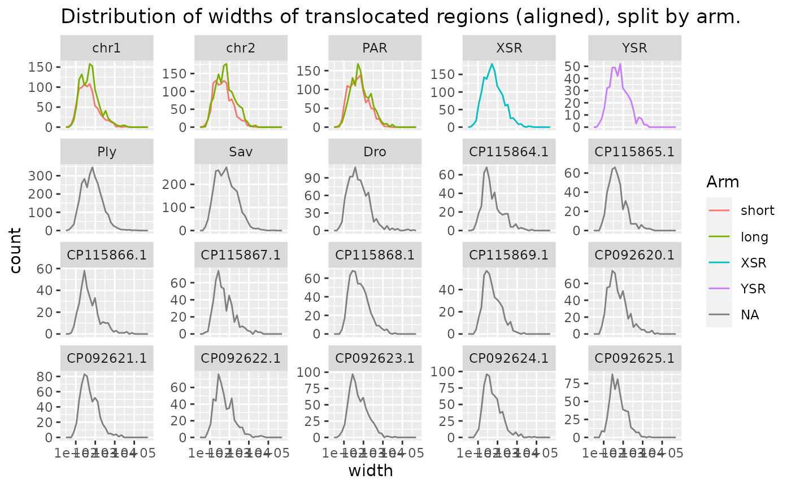
gg_freq_poly(widths$tra_coa_aln) +
aes(col=Arm) +
facet_wrap(~name, scales = "free_y", ncol=5) +
ggtitle("Distribution of widths of translocated regions (aligned), split by genome pair")
gg_freq_poly(widths$tra_coa_aln |> subset(chr %in% c("chr1", "chr2", "PAR"))) +
aes(col=Arm) +
facet_wrap(~dist, scales = "free_y", nrow=1) +
ggtitle("Distribution of widths of translocated regions (aligned), split by distance group") +
geom_vline(xintercept = 300) +
scale_x_log10("Width (vertical bar at 300 bp)")## Scale for 'x' is already present. Adding another scale for 'x', which will replace the existing scale.
Aligned, after removal
widths$tra_coa2_aln <- makeWidthsDF(sapply(coa2, \(gb) gb |> flagTranslocations() |> filterTranslocations())) |> tibble::as_tibble()
gg_freq_poly(widths$tra_coa2_aln) +
aes(col=Arm) +
facet_wrap(~chr, scales = "free_y") +
ggtitle("Distribution of widths of translocated regions (aligned, after removal), split by arm.")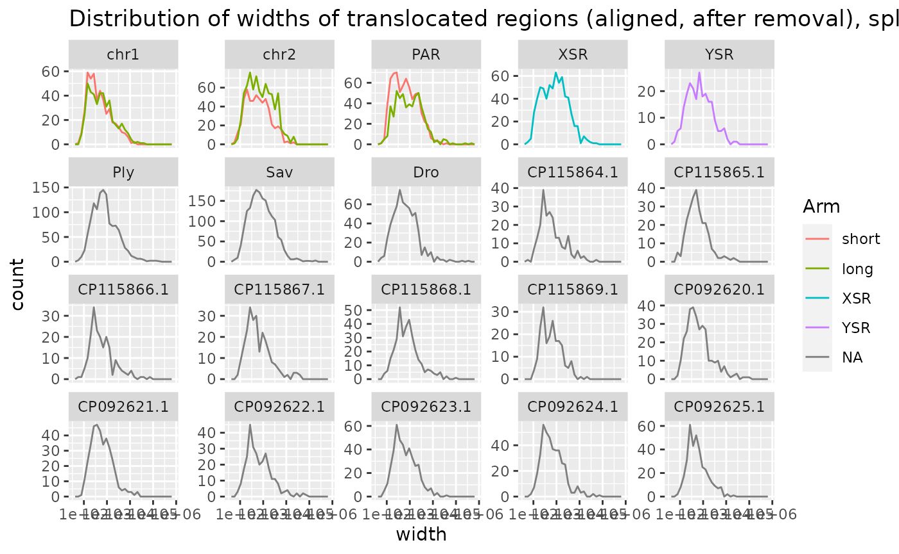
gg_freq_poly(widths$tra_coa2_aln) +
aes(col=Arm) +
facet_wrap(~name, scales = "free_y", ncol=5) +
ggtitle("Distribution of widths of translocated regions (aligned, after removal), split by genome pair")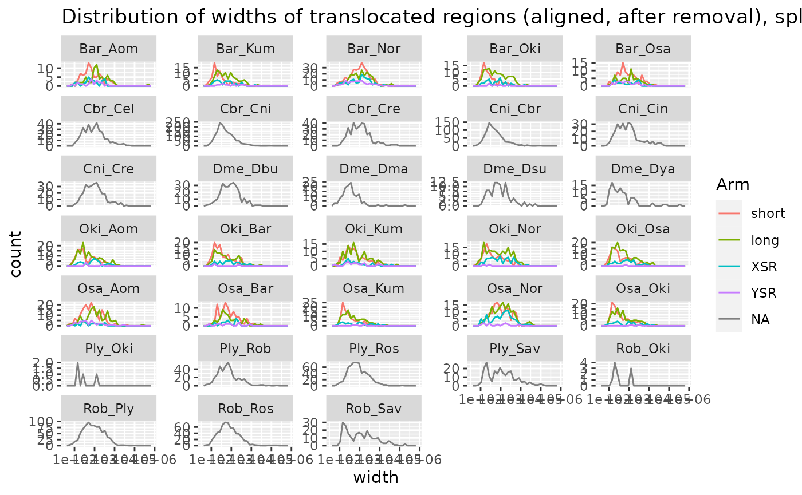
gg_freq_poly(widths$tra_coa2_aln |> subset(chr %in% c("chr1", "chr2", "PAR"))) +
aes(col=Arm) +
facet_wrap(~dist, scales = "free_y", nrow=1) +
ggtitle("Distribution of widths of translocated regions (aligned, after removal), split by distance group") +
geom_vline(xintercept = 300) +
scale_x_log10("Width (vertical bar at 300 bp)")## Scale for 'x' is already present. Adding another scale for 'x', which will replace the existing scale.Double-coalesced regions
gg_freq_poly(widths$coa2) +
aes(col=Arm) +
facet_wrap(~chr, scales = "free_y") +
ggtitle("Distribution of alignment widths after double-collapsing, split by arm.")
gg_freq_poly(widths$coa2) +
aes(col=Arm) +
facet_wrap(~name, scales = "free_y", ncol=5) +
ggtitle("Distribution of widthsof alignment widths after double-collapsing, split by genome pair")
gg_freq_poly(widths$coa2 |> subset(chr %in% c("chr1", "chr2", "PAR"))) +
aes(col=Arm) +
facet_wrap(~dist, scales = "free_y", nrow=1) +
ggtitle("Distribution of alignment widths after double-collapsing, split by distance group") +
geom_vline(xintercept = 500) +
scale_x_log10("Width (vertical bar at 500 bp)")## Scale for 'x' is already present. Adding another scale for 'x', which will replace the existing scale.Compound pictures
“alignedâ€, “unaligned†and “mappedâ€
Facet by genus
p_ali <- gg_freq_poly(widths$gbs |> dplyr::filter(! is.na(genus))) +
aes(width, after_stat(density), col=class) + theme_bw() +
facet_wrap(~genus, scales = "free_y", ncol = 1) +
ggtitle("Aligned")
p_una <- gg_freq_poly(widths$unal |> dplyr::filter(! is.na(genus))) +
aes(width, after_stat(density), col=class) + theme_bw() +
facet_wrap(~genus, scales = "free_y", ncol = 1) +
ggtitle("Not aligned")
p_map <- gg_freq_poly(widths$coa |> dplyr::filter(! is.na(genus))) +
aes(width, after_stat(density), col=class) + theme_bw() +
facet_wrap(~genus, scales = "free_y", ncol = 1) +
ggtitle("Mapped")
# Patchwork
(p_ali | p_una | p_map) + plot_layout(ncol = 3, guides = 'collect') + theme_bw()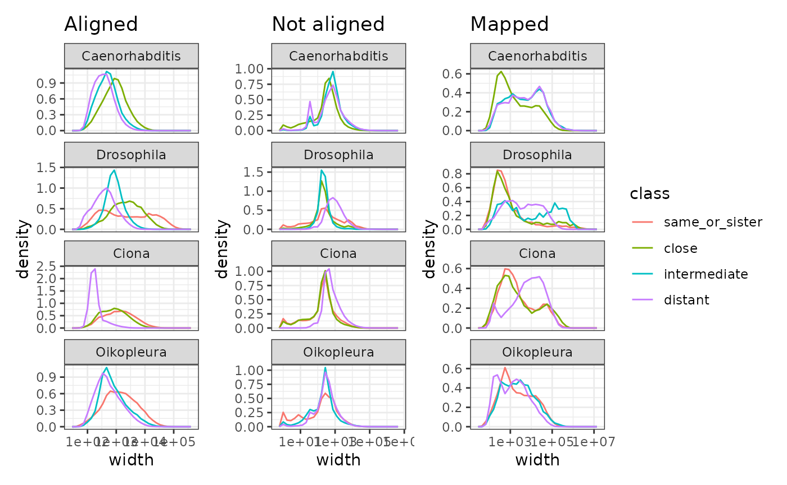
Oik only, color by distance
p_isol <- gg_freq_poly(widths$isol |> dplyr::filter(genus == "Oikopleura")) +
aes(width, after_stat(density), col=class) + theme_bw() +
ggtitle("Isolated alignments")
p_unma <- gg_freq_poly(widths$unmap |> dplyr::filter(genus == "Oikopleura")) +
aes(width, after_stat(density), col=class) + theme_bw() +
ggtitle("Unmapped")
p_coar <- gg_freq_poly(widths$coa |> dplyr::filter(genus == "Oikopleura", !nonCoa)) +
aes(width, after_stat(density), col=class) + theme_bw() +
ggtitle("Colinear regions")
p_brid <- gg_freq_poly(widths$bri |> dplyr::filter(genus == "Oikopleura")) +
aes(width, after_stat(density), col=class) + theme_bw() +
ggtitle("Bridge regions")
p_coal <- gg_freq_poly(widths$gbs |> dplyr::filter(genus == "Oikopleura", !nonCoa)) +
aes(width, after_stat(density), col=class) + theme_bw() +
ggtitle("Colinear alignments")
# Patchwork
(p_isol | p_unma | p_coar | p_brid | p_coal) + plot_layout(nrow = 1, guides = 'collect') + theme_bw()## Warning: Transformation introduced infinite values in continuous x-axis## Warning: Removed 7561 rows containing non-finite values (stat_bin).
Oik only, color by alignment class
w <- rbind(
widths$isol |> dplyr::filter(genus == "Oikopleura") |> dplyr::mutate(aliclass = "Isol"),
widths$unmap |> dplyr::filter(genus == "Oikopleura") |> dplyr::mutate(aliclass = "Unmap"),
widths$coa |> dplyr::filter(genus == "Oikopleura", !nonCoa) |> dplyr::mutate(aliclass = "Col reg"),
widths$bri |> dplyr::filter(genus == "Oikopleura") |> dplyr::mutate(aliclass = "Bridge"),
widths$gbs |> dplyr::filter(genus == "Oikopleura", !nonCoa) |> dplyr::mutate(aliclass = "Col aln")
)
gg_freq_poly(w) +
aes(width, after_stat(density), col=aliclass) + theme_bw()+
facet_wrap(~class, ncol = 1)## Warning: Transformation introduced infinite values in continuous x-axis## Warning: Removed 7561 rows containing non-finite values (stat_bin).
gg_freq_poly(w |> dplyr::filter(class == "distant")) +
aes(width, after_stat(density), col=aliclass) + theme_bw()## Warning: Transformation introduced infinite values in continuous x-axis## Warning: Removed 1406 rows containing non-finite values (stat_bin).
gg_freq_poly(w |> dplyr::filter(class == "distant"), scale = "natural") +
aes(width, after_stat(density), col=aliclass) + theme_bw() +
scale_x_continuous(limits = c(0, 3e3))## Warning: Removed 49725 rows containing non-finite values (stat_bin).## Warning: Removed 10 row(s) containing missing values (geom_path).
“isolatedâ€, “unmappedâ€, “colinear regionsâ€, “bridge†and “colinear alingmentsâ€
Oki – North
p_ali2 <- gg_freq_poly(widths$gbs |> dplyr::filter(dist == "Oki – North", nonCoa), binwidth = 60, scale = "natural") +
aes(width, after_stat(density), col=name) + theme_bw() +
scale_x_continuous(limits = c(0, 3e3)) +
ggtitle("Isolated alignments")
p_unmap2 <- gg_freq_poly(widths$unmap |> dplyr::filter(dist == "Oki – North"), binwidth = 60, scale = "natural") +
aes(width, after_stat(density), col=name) + theme_bw() +
scale_x_continuous(limits = c(0, 3e3)) +
ggtitle("Unmapped")
p_syn2 <- gg_freq_poly(widths$coa |> dplyr::filter(dist == "Oki – North", !nonCoa), binwidth = 600, scale = "natural") +
aes(width, after_stat(density), col=name) + theme_bw() +
scale_x_continuous(limits = c(0, 3e4)) +
ggtitle("Colinear region")
p_map2 <- gg_freq_poly(widths$gbs |> dplyr::filter(dist == "Oki – North", !nonCoa), binwidth = 60, scale = "natural") +
aes(width, after_stat(density), col=name) + theme_bw() +
scale_x_continuous(limits = c(0, 3e3)) +
ggtitle("Colinear alignment")
p_bridge <- gg_freq_poly(widths$bri |> dplyr::filter(dist == "Oki – North"), binwidth = 20, scale = "natural") +
aes(width, after_stat(density), col=name) + theme_bw() +
scale_x_continuous(limits = c(0, 3e3)) +
ggtitle("Bridge")
# Patchwork
p_oki_north <-(p_ali2 | p_unmap2 | p_syn2 | p_bridge | p_map2 ) + plot_layout(ncol = 5, guides = 'collect') + theme_bw() + plot_annotation(title = "Okinawa vs North")
p_oki_north## Warning: Removed 1485 rows containing non-finite values (stat_bin).## Warning: Removed 16 row(s) containing missing values (geom_path).## Warning: Removed 8089 rows containing non-finite values (stat_bin).## Warning: Removed 16 row(s) containing missing values (geom_path).## Warning: Removed 2326 rows containing non-finite values (stat_bin).## Warning: Removed 16 row(s) containing missing values (geom_path).## Warning: Removed 3190 rows containing non-finite values (stat_bin).## Warning: Removed 16 row(s) containing missing values (geom_path).## Warning: Removed 15668 rows containing non-finite values (stat_bin).## Warning: Removed 16 row(s) containing missing values (geom_path).North – North
p_ali3 <- gg_freq_poly(widths$gbs |> dplyr::filter(dist == "North – North", nonCoa), binwidth = 60, scale = "natural") +
aes(width, after_stat(density), col=name) + theme_bw() +
scale_x_continuous(limits = c(0, 3e3)) +
ggtitle("Isolated alignments")
p_unmap3 <- gg_freq_poly(widths$unmap |> dplyr::filter(dist == "North – North"), binwidth = 60, scale = "natural") +
aes(width, after_stat(density), col=name) + theme_bw() +
scale_x_continuous(limits = c(0, 3e3)) +
ggtitle("Unmapped")
p_syn3 <- gg_freq_poly(widths$coa |> dplyr::filter(dist == "North – North", !nonCoa), binwidth = 600, scale = "natural") +
aes(width, after_stat(density), col=name) + theme_bw() +
scale_x_continuous(limits = c(0, 3e4)) +
ggtitle("Colinear region")
p_map3 <- gg_freq_poly(widths$gbs |> dplyr::filter(dist == "North – North", !nonCoa), binwidth = 60, scale = "natural") +
aes(width, after_stat(density), col=name) + theme_bw() +
scale_x_continuous(limits = c(0, 3e3)) +
ggtitle("Colinear alignment")
p_bridge3 <- gg_freq_poly(widths$bri |> dplyr::filter(dist == "North – North"), binwidth = 20, scale = "natural") +
aes(width, after_stat(density), col=name) + theme_bw() +
scale_x_continuous(limits = c(0, 3e3)) +
ggtitle("Bridge")
# Patchwork
p_north_north <- (p_ali3 | p_unmap3 | p_syn3 | p_bridge3 | p_map3 ) + plot_layout(ncol = 5, guides = 'collect') + theme_bw() + plot_annotation(title = "North vs North")
p_ali4 <- gg_freq_poly(widths$gbs |> dplyr::filter(dist == "In same pop", nonCoa), binwidth = 60, scale = "natural") +
aes(width, after_stat(density), col=name) + theme_bw() +
scale_x_continuous(limits = c(0, 3e3)) +
ggtitle("Isolated alignments")
p_unmap4 <- gg_freq_poly(widths$unmap |> dplyr::filter(dist == "In same pop"), binwidth = 60, scale = "natural") +
aes(width, after_stat(density), col=name) + theme_bw() +
scale_x_continuous(limits = c(0, 3e3)) +
ggtitle("Unmapped")
p_syn4 <- gg_freq_poly(widths$coa |> dplyr::filter(dist == "In same pop", !nonCoa), binwidth = 600, scale = "natural") +
aes(width, after_stat(density), col=name) + theme_bw() +
scale_x_continuous(limits = c(0, 3e4)) +
ggtitle("Colinear region")
p_map4 <- gg_freq_poly(widths$gbs |> dplyr::filter(dist == "In same pop", !nonCoa), binwidth = 60, scale = "natural") +
aes(width, after_stat(density), col=name) + theme_bw() +
scale_x_continuous(limits = c(0, 3e3)) +
ggtitle("Colinear alignment")
p_bridge4 <- gg_freq_poly(widths$bri |> dplyr::filter(dist == "In same pop"), binwidth = 20, scale = "natural") +
aes(width, after_stat(density), col=name) + theme_bw() +
scale_x_continuous(limits = c(0, 3e3)) +
ggtitle("Bridge")
# Patchwork
p_same_pop <- (p_ali4 | p_unmap4 | p_syn4 | p_bridge4 | p_map4 ) + plot_layout(ncol = 5, guides = 'collect') + theme_bw() + plot_annotation(title = "Same population")
p_oki_north /
p_north_north /
p_same_pop## Warning: Removed 1485 rows containing non-finite values (stat_bin).## Warning: Removed 16 row(s) containing missing values (geom_path).## Warning: Removed 8089 rows containing non-finite values (stat_bin).## Warning: Removed 16 row(s) containing missing values (geom_path).## Warning: Removed 2326 rows containing non-finite values (stat_bin).## Warning: Removed 16 row(s) containing missing values (geom_path).## Warning: Removed 3190 rows containing non-finite values (stat_bin).## Warning: Removed 16 row(s) containing missing values (geom_path).## Warning: Removed 15668 rows containing non-finite values (stat_bin).## Warning: Removed 16 row(s) containing missing values (geom_path).## Warning: Removed 431 rows containing non-finite values (stat_bin).## Warning: Removed 8 row(s) containing missing values (geom_path).## Warning: Removed 2700 rows containing non-finite values (stat_bin).## Warning: Removed 8 row(s) containing missing values (geom_path).## Warning: Removed 1402 rows containing non-finite values (stat_bin).## Warning: Removed 8 row(s) containing missing values (geom_path).## Warning: Removed 876 rows containing non-finite values (stat_bin).## Warning: Removed 8 row(s) containing missing values (geom_path).## Warning: Removed 11985 rows containing non-finite values (stat_bin).## Warning: Removed 8 row(s) containing missing values (geom_path).## Warning: Removed 1031 rows containing non-finite values (stat_bin).## Warning: Removed 6 row(s) containing missing values (geom_path).## Warning: Removed 1229 rows containing non-finite values (stat_bin).## Warning: Removed 6 row(s) containing missing values (geom_path).## Warning: Removed 1482 rows containing non-finite values (stat_bin).## Warning: Removed 6 row(s) containing missing values (geom_path).## Warning: Removed 614 rows containing non-finite values (stat_bin).## Warning: Removed 6 row(s) containing missing values (geom_path).## Warning: Removed 12048 rows containing non-finite values (stat_bin).## Warning: Removed 6 row(s) containing missing values (geom_path).Paired comparison of widths in target and query genomes.
GBreaks2widthTibble <- function(gb, pair = NULL) {
df <- as.data.frame(gb)
if(is.null(df$Arm)) df$Arm <- NA
if(is.null(df$rep)) df$rep <- NA
if(is.null(df$query.rep)) df$query.rep <- NA
tibble::tibble(target = df$width, query = df$query.width,
target.rep = ! is.na(df$rep), query.rep = ! is.na(df$query.rep), # TRUE if overlaps a repeat
pair = pair, Arm = df$Arm,
dist = OikScrambling:::compDistance(pair))
}
gbs.w2w <- do.call(rbind, lapply(names(gbs), \(name) GBreaks2widthTibble(gbs[[name]], pair = name)))
bri.w2s <- do.call(rbind, lapply(names(bri), \(name) GBreaks2widthTibble(bri[[name]], pair = name)))
tra.w2s <- do.call(rbind, lapply(names(tra), \(name) GBreaks2widthTibble(tra[[name]], pair = name)))
tra2.w2s <- do.call(rbind, lapply(names(tra2), \(name) GBreaks2widthTibble(tra2[[name]], pair = name)))
rbind (
aligned = table(paste( gbs.w2w$target.rep, gbs.w2w$query.rep)),
bri = table(paste(bri.w2s$target.rep, bri.w2s$query.rep)),
transpo = table(paste( tra.w2s$target.rep, tra.w2s$query.rep))
)## FALSE FALSE FALSE TRUE TRUE FALSE TRUE TRUE
## aligned 768648 41624 41943 52103
## bri 553741 84573 82538 35159
## transpo 5824 1252 3043 2782
ggPlotW2W <- function(tibble) {
ggplot(tibble) +
aes(target, query) +
geom_point(alpha = 0.05) +
geom_density_2d() +
scale_x_log10() +
scale_y_log10()
}
ggPlotW2W(gbs.w2w |> dplyr::filter(!is.na(Arm))) + facet_wrap(~Arm) +
ggtitle("Width of the target and query aligned regions")
ggPlotW2W(bri.w2s |> dplyr::filter(!is.na(Arm))) + facet_wrap(~Arm) +
ggtitle("Width of the target and query bridge regions")## Warning: Transformation introduced infinite values in continuous x-axis## Warning: Transformation introduced infinite values in continuous y-axis## Warning: Transformation introduced infinite values in continuous x-axis## Warning: Transformation introduced infinite values in continuous y-axis## Warning: Removed 14293 rows containing non-finite values (stat_density2d).
ggPlotW2W(gbs.w2w) + facet_wrap(~pair) +
ggtitle("Width of the target and query aligned regions")## Warning: stat_contour(): Zero contours were generated## Warning in min(x): no non-missing arguments to min; returning Inf## Warning in max(x): no non-missing arguments to max; returning -Inf## Warning: stat_contour(): Zero contours were generated## Warning in min(x): no non-missing arguments to min; returning Inf## Warning in max(x): no non-missing arguments to max; returning -Inf## Warning: stat_contour(): Zero contours were generated## Warning in min(x): no non-missing arguments to min; returning Inf## Warning in max(x): no non-missing arguments to max; returning -Inf## Warning: stat_contour(): Zero contours were generated## Warning in min(x): no non-missing arguments to min; returning Inf## Warning in max(x): no non-missing arguments to max; returning -Inf## Warning: stat_contour(): Zero contours were generated## Warning in min(x): no non-missing arguments to min; returning Inf## Warning in max(x): no non-missing arguments to max; returning -Inf## Warning: stat_contour(): Zero contours were generated## Warning in min(x): no non-missing arguments to min; returning Inf## Warning in max(x): no non-missing arguments to max; returning -Inf## Warning: stat_contour(): Zero contours were generated## Warning in min(x): no non-missing arguments to min; returning Inf## Warning in max(x): no non-missing arguments to max; returning -Inf## Warning: stat_contour(): Zero contours were generated## Warning in min(x): no non-missing arguments to min; returning Inf## Warning in max(x): no non-missing arguments to max; returning -Inf## Warning: stat_contour(): Zero contours were generated## Warning in min(x): no non-missing arguments to min; returning Inf## Warning in max(x): no non-missing arguments to max; returning -Inf## Warning: stat_contour(): Zero contours were generated## Warning in min(x): no non-missing arguments to min; returning Inf## Warning in max(x): no non-missing arguments to max; returning -Inf## Warning: stat_contour(): Zero contours were generated## Warning in min(x): no non-missing arguments to min; returning Inf## Warning in max(x): no non-missing arguments to max; returning -Inf## Warning: stat_contour(): Zero contours were generated## Warning in min(x): no non-missing arguments to min; returning Inf## Warning in max(x): no non-missing arguments to max; returning -Inf## Warning: stat_contour(): Zero contours were generated## Warning in min(x): no non-missing arguments to min; returning Inf## Warning in max(x): no non-missing arguments to max; returning -Inf## Warning: stat_contour(): Zero contours were generated## Warning in min(x): no non-missing arguments to min; returning Inf## Warning in max(x): no non-missing arguments to max; returning -Inf## Warning: stat_contour(): Zero contours were generated## Warning in min(x): no non-missing arguments to min; returning Inf## Warning in max(x): no non-missing arguments to max; returning -Inf## Warning: stat_contour(): Zero contours were generated## Warning in min(x): no non-missing arguments to min; returning Inf## Warning in max(x): no non-missing arguments to max; returning -Inf## Warning: stat_contour(): Zero contours were generated## Warning in min(x): no non-missing arguments to min; returning Inf## Warning in max(x): no non-missing arguments to max; returning -Inf## Warning: stat_contour(): Zero contours were generated## Warning in min(x): no non-missing arguments to min; returning Inf## Warning in max(x): no non-missing arguments to max; returning -Inf## Warning: stat_contour(): Zero contours were generated## Warning in min(x): no non-missing arguments to min; returning Inf## Warning in max(x): no non-missing arguments to max; returning -Inf## Warning: stat_contour(): Zero contours were generated## Warning in min(x): no non-missing arguments to min; returning Inf## Warning in max(x): no non-missing arguments to max; returning -Inf## Warning: stat_contour(): Zero contours were generated## Warning in min(x): no non-missing arguments to min; returning Inf## Warning in max(x): no non-missing arguments to max; returning -Inf## Warning: stat_contour(): Zero contours were generated## Warning in min(x): no non-missing arguments to min; returning Inf## Warning in max(x): no non-missing arguments to max; returning -Inf
ggPlotW2W(gbs.w2w) + facet_wrap(~dist) +
ggtitle("Width of the target and query aligned regions")## Warning: stat_contour(): Zero contours were generated## Warning in min(x): no non-missing arguments to min; returning Inf## Warning in max(x): no non-missing arguments to max; returning -Inf## Warning: stat_contour(): Zero contours were generated## Warning in min(x): no non-missing arguments to min; returning Inf## Warning in max(x): no non-missing arguments to max; returning -Inf## Warning: stat_contour(): Zero contours were generated## Warning in min(x): no non-missing arguments to min; returning Inf## Warning in max(x): no non-missing arguments to max; returning -Inf## Warning: stat_contour(): Zero contours were generated## Warning in min(x): no non-missing arguments to min; returning Inf## Warning in max(x): no non-missing arguments to max; returning -Inf## Warning: stat_contour(): Zero contours were generated## Warning in min(x): no non-missing arguments to min; returning Inf## Warning in max(x): no non-missing arguments to max; returning -Inf## Warning: stat_contour(): Zero contours were generated## Warning in min(x): no non-missing arguments to min; returning Inf## Warning in max(x): no non-missing arguments to max; returning -Inf
ggPlotW2W(bri.w2s) + facet_wrap(~pair) +
ggtitle("Width of the target and query bridge regions")## Warning: Transformation introduced infinite values in continuous x-axis## Warning: Transformation introduced infinite values in continuous y-axis## Warning: Transformation introduced infinite values in continuous x-axis## Warning: Transformation introduced infinite values in continuous y-axis## Warning: Removed 36376 rows containing non-finite values (stat_density2d).## Warning: stat_contour(): Zero contours were generated## Warning in min(x): no non-missing arguments to min; returning Inf## Warning in max(x): no non-missing arguments to max; returning -Inf
ggPlotW2W(tra.w2s |> dplyr::filter(!is.na(Arm))) + facet_wrap(~pair) +
ggtitle("Width of the target and query translocated regions")## Warning: Transformation introduced infinite values in continuous x-axis## Warning: Transformation introduced infinite values in continuous y-axis## Warning: Transformation introduced infinite values in continuous x-axis## Warning: Transformation introduced infinite values in continuous y-axis## Warning: Removed 893 rows containing non-finite values (stat_density2d).
ggPlotW2W(tra.w2s |> dplyr::filter(!is.na(Arm))) + facet_wrap(~dist) +
ggtitle("Width of the target and query translocated regions")## Warning: Transformation introduced infinite values in continuous x-axis## Warning: Transformation introduced infinite values in continuous y-axis## Warning: Transformation introduced infinite values in continuous x-axis## Warning: Transformation introduced infinite values in continuous y-axis## Warning: Removed 893 rows containing non-finite values (stat_density2d).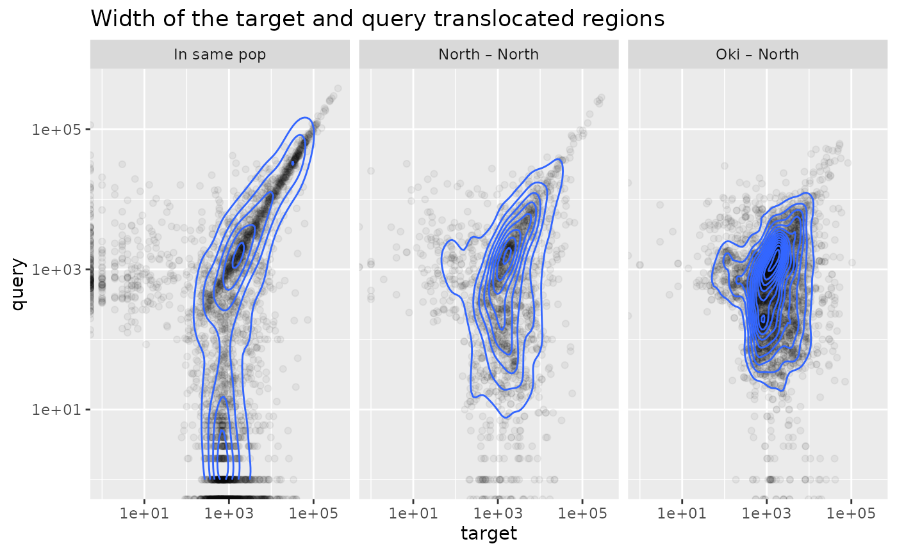
ggPlotW2W(tra2.w2s |> dplyr::filter(!is.na(Arm))) + facet_wrap(~pair) +
ggtitle("Width of the target and query translocated regions (after removal)")## Warning: Transformation introduced infinite values in continuous x-axis## Warning: Transformation introduced infinite values in continuous y-axis## Warning: Transformation introduced infinite values in continuous x-axis## Warning: Transformation introduced infinite values in continuous y-axis## Warning: Removed 62 rows containing non-finite values (stat_density2d).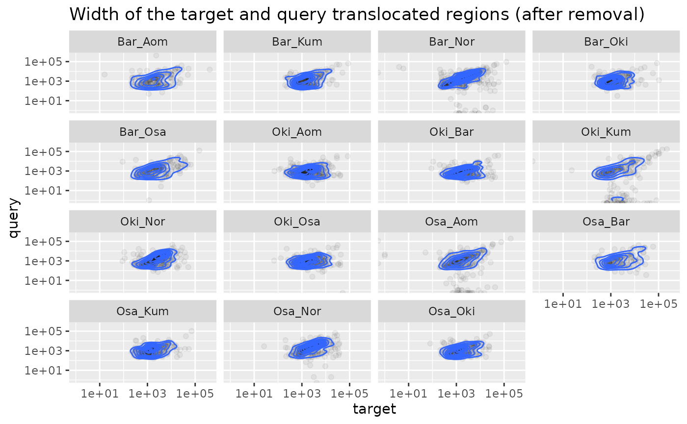
ggPlotW2W(tra2.w2s |> dplyr::filter(!is.na(Arm))) + facet_wrap(~dist) +
ggtitle("Width of the target and query translocated regions (after removal)")## Warning: Transformation introduced infinite values in continuous x-axis## Warning: Transformation introduced infinite values in continuous y-axis## Warning: Transformation introduced infinite values in continuous x-axis## Warning: Transformation introduced infinite values in continuous y-axis## Warning: Removed 62 rows containing non-finite values (stat_density2d).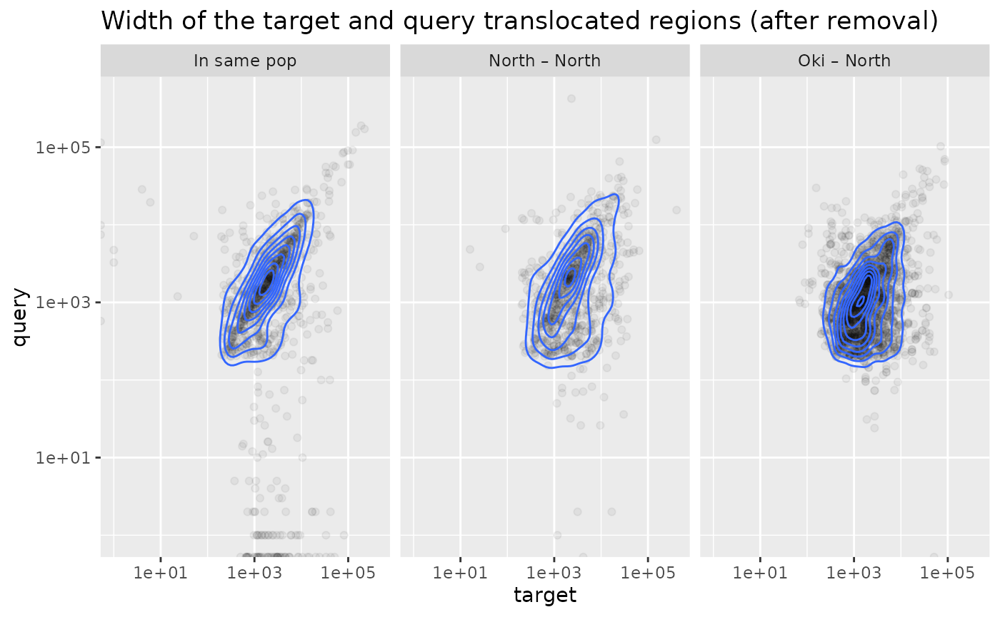
ggPlotW2W(gbs.w2w) +
facet_wrap(~query.rep + target.rep) +
ggtitle("Width of the target and query aligned regions, matching or not matching repeats")
ggPlotW2W(bri.w2s) +
facet_wrap(~query.rep + target.rep) +
ggtitle("Width of the target and query bridge regions, matching or not matching repeats")## Warning: Transformation introduced infinite values in continuous x-axis## Warning: Transformation introduced infinite values in continuous y-axis## Warning: Transformation introduced infinite values in continuous x-axis## Warning: Transformation introduced infinite values in continuous y-axis## Warning: Removed 36376 rows containing non-finite values (stat_density2d).
ggPlotW2W(tra.w2s) +
facet_wrap(~dist + query.rep + target.rep, nrow = 3) +
ggtitle("Width of the target and query translocated regions, matching or not matching repeats")## Warning: Transformation introduced infinite values in continuous x-axis## Warning: Transformation introduced infinite values in continuous y-axis## Warning: Transformation introduced infinite values in continuous x-axis## Warning: Transformation introduced infinite values in continuous y-axis## Warning: Removed 1202 rows containing non-finite values (stat_density2d).
ggplot(bri.w2s) +
aes(target / query, col = paste(target.rep, query.rep) ) +
scale_x_log10() +
geom_freqpoly() +
ggtitle("In presence of a repeat, target width tends to be longer than query") +
geom_vline(xintercept = 1)## Warning: Transformation introduced infinite values in continuous x-axis## `stat_bin()` using `bins = 30`. Pick better value with `binwidth`.## Warning: Removed 36376 rows containing non-finite values (stat_bin).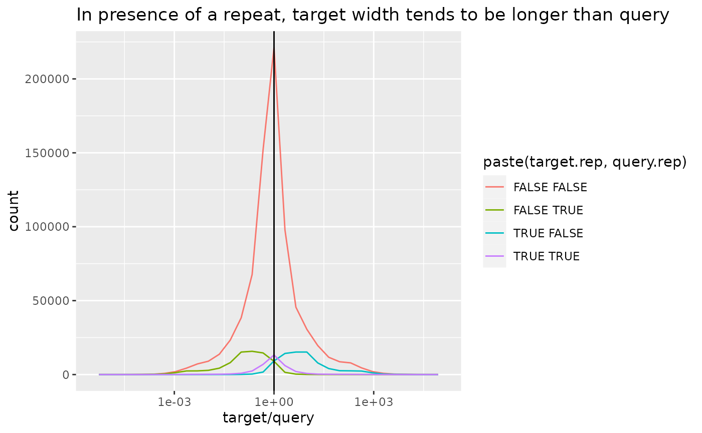
Structural variants
Width of inverted regions
We know that we can detect more inversions after coalescing and removing translocations (vignette("Inversions", package = "OikScrambling")).
Many inversions are shorter than 1Â kbp. Size may differ slightly between long and short arms.
invs.gbs <- sapply(gbs, function(gb) filterInversions(flagInversions(gb))) |> SimpleList()
invs.coa <- sapply(coa, function(gb) filterInversions(flagInversions(gb))) |> SimpleList()
invs.coa2 <- sapply(coa2, function(gb) filterInversions(flagInversions(gb))) |> SimpleList()
sapply(invs.gbs, length)## Oki_Osa Oki_Bar Oki_Kum Oki_Aom Oki_Nor Osa_Oki Osa_Bar Osa_Kum Osa_Aom Osa_Nor Bar_Oki Bar_Osa Bar_Kum Bar_Aom Bar_Nor Ply_Ros Ply_Rob Ply_Sav Ply_Oki Rob_Ros Rob_Ply Rob_Sav Rob_Oki Dme_Dbu Dme_Dsu
## 614 604 89 608 541 613 241 620 56 212 597 237 608 237 19 42 58 16 0 50 58 14 0 697 20
## Dme_Dya Dme_Dma
## 13 12
sapply(invs.coa, length)## Oki_Osa Oki_Bar Oki_Kum Oki_Aom Oki_Nor Osa_Oki Osa_Bar Osa_Kum Osa_Aom Osa_Nor Bar_Oki Bar_Osa Bar_Kum Bar_Aom Bar_Nor Ply_Ros Ply_Rob Ply_Sav Ply_Oki Rob_Ros Rob_Ply Rob_Sav Rob_Oki Dme_Dbu Dme_Dsu
## 670 675 105 665 591 671 321 678 73 275 667 319 686 319 24 51 71 92 0 65 70 92 0 1003 44
## Dme_Dya Dme_Dma
## 21 16
sapply(invs.coa2, length)## Oki_Osa Oki_Bar Oki_Kum Oki_Aom Oki_Nor Osa_Oki Osa_Bar Osa_Kum Osa_Aom Osa_Nor Bar_Oki Bar_Osa Bar_Kum Bar_Aom Bar_Nor Ply_Ros Ply_Rob Ply_Sav Ply_Oki Rob_Ros Rob_Ply Rob_Sav Rob_Oki Dme_Dbu Dme_Dsu
## 704 705 122 695 611 706 330 708 79 279 695 327 711 335 27 55 76 92 0 71 77 92 0 1003 45
## Dme_Dya Dme_Dma
## 23 16
# Sanity check that we detect inversions on both strands
sapply(invs.coa2, \(x) {summary(decode(strand(x)))})## Oki_Osa Oki_Bar Oki_Kum Oki_Aom Oki_Nor Osa_Oki Osa_Bar Osa_Kum Osa_Aom Osa_Nor Bar_Oki Bar_Osa Bar_Kum Bar_Aom Bar_Nor Ply_Ros Ply_Rob Ply_Sav Ply_Oki Rob_Ros Rob_Ply Rob_Sav Rob_Oki Dme_Dbu
## + 381 365 33 369 317 382 186 367 38 147 354 182 365 164 7 2 6 51 0 5 5 52 0 470
## - 323 340 89 326 294 324 144 341 41 132 341 145 346 171 20 53 70 41 0 66 72 40 0 533
## * 0 0 0 0 0 0 0 0 0 0 0 0 0 0 0 0 0 0 0 0 0 0 0 0
## Dme_Dsu Dme_Dya Dme_Dma
## + 29 11 3
## - 16 12 13
## * 0 0 0
widths$invs.gbs <- makeWidthsDF(invs.gbs) |> tibble::as_tibble()
widths$invs.coa <- makeWidthsDF(invs.coa) |> tibble::as_tibble()
widths$invs.coa2 <- makeWidthsDF(invs.coa2) |> tibble::as_tibble()
gg_freq_poly(widths$invs.gbs) +
aes(col=Arm) +
facet_wrap(~chr, scales = "free_y") +
ggtitle("Distribution of alignment widths for inverted regions, using aligned regions, split by arm.")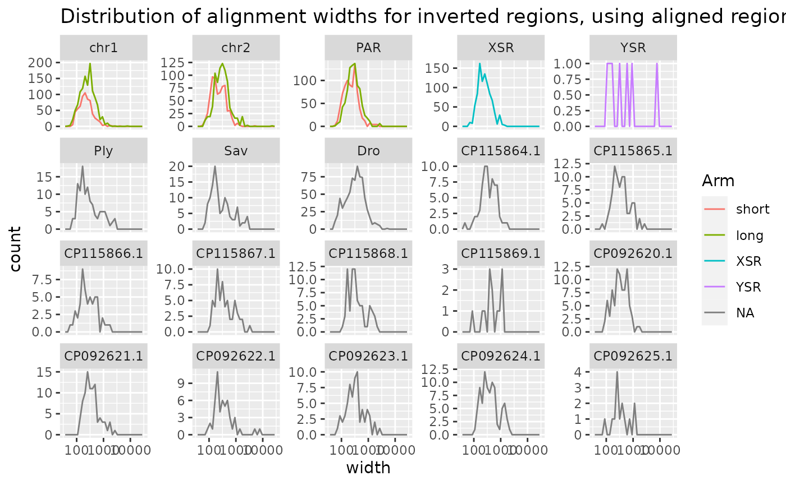
gg_freq_poly(widths$invs.gbs) +
aes(col=Arm) +
facet_wrap(~name, scales = "free_y", ncol=5) +
ggtitle("Distribution of alignment widths for inverted regions, using aligned regions, split by genome pair")
gg_freq_poly(widths$invs.gbs |> subset(chr %in% c("chr1", "chr2", "PAR"))) +
aes(col=Arm) +
facet_wrap(~dist, scales = "free_y", nrow=1) +
ggtitle("Distribution of alignment widths for inverted regions, using aligned regions, split by distance group") +
geom_vline(xintercept = 500) +
scale_x_log10("Width (vertical bar at 500 bp)")## Scale for 'x' is already present. Adding another scale for 'x', which will replace the existing scale.
gg_freq_poly(widths$invs.coa) +
aes(col=Arm) +
facet_wrap(~chr, scales = "free_y") +
ggtitle("Distribution of alignment widths for inverted regions, using mapped regions, split by arm.")
gg_freq_poly(widths$invs.coa) +
aes(col=Arm) +
facet_wrap(~name, scales = "free_y", ncol=5) +
ggtitle("Distribution of alignment widths for inverted regions, using mapped regions, split by genome pair")
gg_freq_poly(widths$invs.coa |> subset(chr %in% c("chr1", "chr2", "PAR"))) +
aes(col=Arm) +
facet_wrap(~dist, scales = "free_y", nrow=1) +
ggtitle("Distribution of alignment widths for inverted regions, using mapped regions, split by distance group") +
geom_vline(xintercept = 500) +
scale_x_log10("Width (vertical bar at 500 bp)")## Scale for 'x' is already present. Adding another scale for 'x', which will replace the existing scale.
gg_freq_poly(widths$invs.coa2) +
aes(col=Arm) +
facet_wrap(~chr, scales = "free_y") +
ggtitle("Distribution of alignment widths for inverted regions, using doublemapped regions, split by arm.")
gg_freq_poly(widths$invs.coa2) +
aes(col=Arm) +
facet_wrap(~name, scales = "free_y", ncol=5) +
ggtitle("Distribution of alignment widths for inverted regions, using doublemapped regions, split by genome pair")
gg_freq_poly(widths$invs.coa2 |> subset(chr %in% c("chr1", "chr2", "PAR"))) +
aes(col=Arm) +
facet_wrap(~dist, scales = "free_y", nrow=1) +
ggtitle("Distribution of alignment widths for inverted regions, using doublemapped regions, split by distance group") +
geom_vline(xintercept = 500) +
scale_x_log10("Width (vertical bar at 500 bp)")## Scale for 'x' is already present. Adding another scale for 'x', which will replace the existing scale.
Width of gaps next to the inverted regions
inv.lgaps <- sapply(coa, leftInversionGaps) |> SimpleList()
inv.lgaps[ 1:5] <- sapply(inv.lgaps[ 1:5], flagLongShort, longShort$OKI2018.I69)
inv.lgaps[ 6:10] <- sapply(inv.lgaps[ 6:10], flagLongShort, longShort$OSKA2016v1.9)
inv.lgaps[11:15] <- sapply(inv.lgaps[11:15], flagLongShort, longShort$Bar2.p4)
sapply(inv.lgaps, length)## Oki_Osa Oki_Bar Oki_Kum Oki_Aom Oki_Nor Osa_Oki Osa_Bar Osa_Kum Osa_Aom Osa_Nor Bar_Oki Bar_Osa Bar_Kum Bar_Aom Bar_Nor Ply_Ros Ply_Rob Ply_Sav Ply_Oki Rob_Ros Rob_Ply Rob_Sav Rob_Oki Dme_Dbu Dme_Dsu
## 669 675 96 665 591 669 319 678 69 274 666 315 685 315 22 46 65 92 0 61 67 92 0 1003 44
## Dme_Dya Dme_Dma
## 21 14
widths$invs.lgaps <- makeWidthsDF(inv.lgaps) |> tibble::as_tibble()
gg_freq_poly(widths$invs.lgaps) +
aes(col=Arm) +
facet_wrap(~chr, scales = "free_y") +
ggtitle("Distribution widths of left gaps next to inverted regions, split by arm.") +
geom_vline(xintercept = 1000)